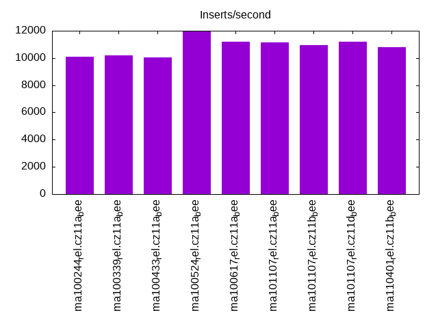
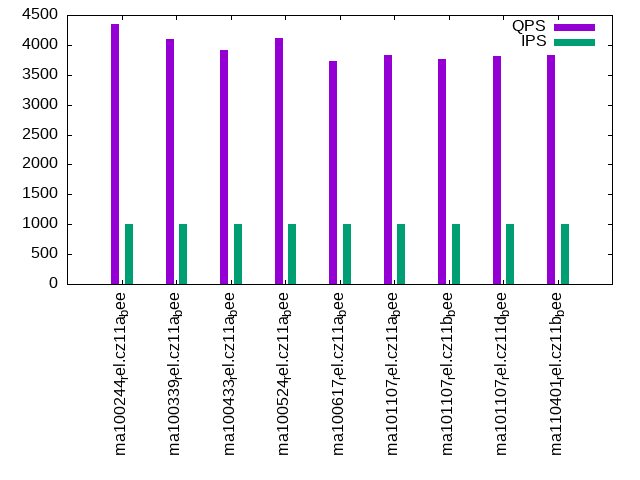

Introduction
This is a report for the insert benchmark with 30M docs and 1 client(s). It is generated by scripts (bash, awk, sed) and Tufte might not be impressed. An overview of the insert benchmark is here and a short update is here. Below, by DBMS, I mean DBMS+version.config. An example is my8020.c10b40 where my means MySQL, 8020 is version 8.0.20 and c10b40 is the name for the configuration file.
The test server has 8 AMD cores, 16G RAM and an NVMe SSD. It is described here as the Beelink. The benchmark was run with 1 client and there were 1 or 3 connections per client (1 for queries or inserts without rate limits, 1+1 for rate limited inserts+deletes). It uses 1 table. It loads 30M rows per table without secondary indexes, creates 3 secondary indexes per table, then inserts 40m+10m rows per table with a delete per insert to avoid growing the table. It then does 6 read+write tests for 1800s each that do queries as fast as possible with 100,100,500,500,1000,1000 inserts/s and the same for deletes/s per client concurrent with the queries. The database is cached in memory. Clients and the DBMS share one server. The per-database configs are in the per-database subdirectories here.
The tested DBMS are:
- ma100244_rel.cz11a_bee - MariaDB 10.2.44 with the cz11a_bee config that uses innodb_flush_method=O_DIRECT_NO_FSYNC
- ma100339_rel.cz11a_bee - MariaDB 10.3.39 with the cz11a_bee config
- ma100433_rel.cz11a_bee - MariaDB 10.4.33 with the cz11a_bee config
- ma100524_rel.cz11a_bee - MariaDB 10.5.24 with the cz11a_bee config
- ma100617_rel.cz11a_bee - MariaDB 10.6.17 with the cz11a_bee config
- ma101107_rel.cz11a_bee - MariaDB 10.11.7 with the cz11a_bee config
- ma101107_rel.cz11b_bee - MariaDB 10.11.7 with the cz11b_bee config that uses innodb_flush_method=O_DIRECT
- ma101107_rel.cz11c_bee - MariaDB 10.11.7 with the cz11c_bee config that uses innodb_flush_method=fsync
- ma101107_rel.cz11d_bee - MariaDB 10.11.7 with the cz11d_bee config that uses innodb_change_buffering=all
- ma110401_rel.cz11b_bee - MariaDB 11.4.1 with the cz11b_bee config that uses innodb_flush_method=O_DIRECT
- ma110401_rel.cz11c_bee - MariaDB 11.4.1 with the cz11c_bee config that uses innodb_flush_method=fsync
Contents
- Summary
- l.i0: load without secondary indexes
- l.x: create secondary indexes
- l.i1: continue load after secondary indexes created with 50 inserts per transaction
- l.i2: continue load after secondary indexes created with 5 inserts per transaction
- qr100.L1: range queries with 100 insert/s per client
- qp100.L2: point queries with 100 insert/s per client
- qr500.L3: range queries with 500 insert/s per client
- qp500.L4: point queries with 500 insert/s per client
- qr1000.L5: range queries with 1000 insert/s per client
- qp1000.L6: point queries with 1000 insert/s per client
Summary
The numbers are inserts/s for l.i0, l.i1 and l.i2, indexed docs (or rows) /s for l.x and queries/s for qr100, qp100 thru qr1000, qp1000" The values are the average rate over the entire test for inserts (IPS) and queries (QPS). The range of values for IPS and QPS is split into 3 parts: bottom 25%, middle 50%, top 25%. Values in the bottom 25% have a red background, values in the top 25% have a green background and values in the middle have no color. A gray background is used for values that can be ignored because the DBMS did not sustain the target insert rate. Red backgrounds are not used when the minimum value is within 80% of the max value.
| dbms | l.i0 | l.x | l.i1 | l.i2 | qr100 | qp100 | qr500 | qp500 | qr1000 | qp1000 |
|---|---|---|---|---|---|---|---|---|---|---|
| ma100244_rel.cz11a_bee | 95541 | 155441 | 16454 | 10111 | 4128 | 4106 | 4184 | 4231 | 4232 | 4350 |
| ma100339_rel.cz11a_bee | 83565 | 150000 | 16320 | 10194 | 3970 | 3970 | 4062 | 4055 | 4182 | 4093 |
| ma100433_rel.cz11a_bee | 83102 | 152285 | 16522 | 10040 | 3713 | 3764 | 3757 | 3805 | 3814 | 3920 |
| ma100524_rel.cz11a_bee | 76726 | 132744 | 21345 | 11947 | 3607 | 3801 | 3650 | 4015 | 3619 | 4107 |
| ma100617_rel.cz11a_bee | 81081 | 131005 | 19286 | 11186 | 3613 | 3698 | 3573 | 3813 | 3580 | 3727 |
| ma101107_rel.cz11a_bee | 83799 | 130435 | 19066 | 11136 | 3565 | 3729 | 3516 | 3818 | 3574 | 3824 |
| ma101107_rel.cz11b_bee | 83565 | 130435 | 17730 | 10941 | 3670 | 3588 | 3621 | 3791 | 3578 | 3768 |
| ma101107_rel.cz11d_bee | 83799 | 130435 | 19175 | 11198 | 3614 | 3720 | 3580 | 3802 | 3597 | 3807 |
| ma110401_rel.cz11b_bee | 82192 | 128206 | 17770 | 10799 | 3667 | 3728 | 3593 | 3835 | 3618 | 3836 |
This table has relative throughput, throughput for the DBMS relative to the DBMS in the first line, using the absolute throughput from the previous table. Values less than 0.95 have a yellow background. Values greater than 1.05 have a blue background.
| dbms | l.i0 | l.x | l.i1 | l.i2 | qr100 | qp100 | qr500 | qp500 | qr1000 | qp1000 |
|---|---|---|---|---|---|---|---|---|---|---|
| ma100244_rel.cz11a_bee | 1.00 | 1.00 | 1.00 | 1.00 | 1.00 | 1.00 | 1.00 | 1.00 | 1.00 | 1.00 |
| ma100339_rel.cz11a_bee | 0.87 | 0.96 | 0.99 | 1.01 | 0.96 | 0.97 | 0.97 | 0.96 | 0.99 | 0.94 |
| ma100433_rel.cz11a_bee | 0.87 | 0.98 | 1.00 | 0.99 | 0.90 | 0.92 | 0.90 | 0.90 | 0.90 | 0.90 |
| ma100524_rel.cz11a_bee | 0.80 | 0.85 | 1.30 | 1.18 | 0.87 | 0.93 | 0.87 | 0.95 | 0.86 | 0.94 |
| ma100617_rel.cz11a_bee | 0.85 | 0.84 | 1.17 | 1.11 | 0.88 | 0.90 | 0.85 | 0.90 | 0.85 | 0.86 |
| ma101107_rel.cz11a_bee | 0.88 | 0.84 | 1.16 | 1.10 | 0.86 | 0.91 | 0.84 | 0.90 | 0.84 | 0.88 |
| ma101107_rel.cz11b_bee | 0.87 | 0.84 | 1.08 | 1.08 | 0.89 | 0.87 | 0.87 | 0.90 | 0.85 | 0.87 |
| ma101107_rel.cz11d_bee | 0.88 | 0.84 | 1.17 | 1.11 | 0.88 | 0.91 | 0.86 | 0.90 | 0.85 | 0.88 |
| ma110401_rel.cz11b_bee | 0.86 | 0.82 | 1.08 | 1.07 | 0.89 | 0.91 | 0.86 | 0.91 | 0.85 | 0.88 |
This lists the average rate of inserts/s for the tests that do inserts concurrent with queries. For such tests the query rate is listed in the table above. The read+write tests are setup so that the insert rate should match the target rate every second. Cells that are not at least 95% of the target have a red background to indicate a failure to satisfy the target.
| dbms | qr100.L1 | qp100.L2 | qr500.L3 | qp500.L4 | qr1000.L5 | qp1000.L6 |
|---|---|---|---|---|---|---|
| ma100244_rel.cz11a_bee | 100 | 100 | 499 | 499 | 998 | 998 |
| ma100339_rel.cz11a_bee | 100 | 100 | 499 | 499 | 998 | 998 |
| ma100433_rel.cz11a_bee | 100 | 100 | 499 | 499 | 998 | 998 |
| ma100524_rel.cz11a_bee | 100 | 100 | 499 | 499 | 998 | 998 |
| ma100617_rel.cz11a_bee | 100 | 100 | 499 | 499 | 998 | 998 |
| ma101107_rel.cz11a_bee | 100 | 100 | 499 | 499 | 998 | 998 |
| ma101107_rel.cz11b_bee | 100 | 100 | 499 | 499 | 998 | 998 |
| ma101107_rel.cz11d_bee | 100 | 100 | 499 | 499 | 998 | 998 |
| ma110401_rel.cz11b_bee | 100 | 100 | 499 | 499 | 998 | 998 |
| target | 100 | 100 | 500 | 500 | 1000 | 1000 |
l.i0
l.i0: load without secondary indexes. Graphs for performance per 1-second interval are here.
Average throughput:
Insert response time histogram: each cell has the percentage of responses that take <= the time in the header and max is the max response time in seconds. For the max column values in the top 25% of the range have a red background and in the bottom 25% of the range have a green background. The red background is not used when the min value is within 80% of the max value.
| dbms | 256us | 1ms | 4ms | 16ms | 64ms | 256ms | 1s | 4s | 16s | gt | max |
|---|---|---|---|---|---|---|---|---|---|---|---|
| ma100244_rel.cz11a_bee | 86.770 | 12.870 | 0.345 | 0.011 | 0.004 | 0.150 | |||||
| ma100339_rel.cz11a_bee | 7.202 | 92.253 | 0.500 | 0.041 | 0.004 | 0.151 | |||||
| ma100433_rel.cz11a_bee | 2.219 | 97.372 | 0.370 | 0.035 | 0.004 | 0.153 | |||||
| ma100524_rel.cz11a_bee | 3.727 | 95.537 | 0.577 | 0.156 | 0.004 | 0.140 | |||||
| ma100617_rel.cz11a_bee | 1.759 | 97.919 | 0.193 | 0.123 | 0.005 | 0.179 | |||||
| ma101107_rel.cz11a_bee | 10.964 | 88.724 | 0.197 | 0.111 | 0.005 | 0.182 | |||||
| ma101107_rel.cz11b_bee | 9.943 | 89.744 | 0.197 | 0.111 | 0.005 | 0.229 | |||||
| ma101107_rel.cz11d_bee | 10.120 | 89.568 | 0.184 | 0.122 | 0.005 | 0.190 | |||||
| ma110401_rel.cz11b_bee | 2.688 | 96.998 | 0.187 | 0.122 | 0.005 | 0.206 |
Performance metrics for the DBMS listed above. Some are normalized by throughput, others are not. Legend for results is here.
ips qps rps rmbps wps wmbps rpq rkbpq wpi wkbpi csps cpups cspq cpupq dbgb1 dbgb2 rss maxop p50 p99 tag 95541 0 0 0.0 453.9 33.7 0.000 0.000 0.005 0.361 10657 22.8 0.112 19 2.0 17.8 2.4 0.150 96391 77714 ma100244_rel.cz11a_bee 83565 0 0 0.0 538.7 35.5 0.000 0.000 0.006 0.435 27921 34.4 0.334 33 2.0 17.8 2.5 0.151 83909 69523 ma100339_rel.cz11a_bee 83102 0 0 0.0 459.9 32.9 0.000 0.000 0.006 0.405 27677 33.9 0.333 33 2.0 17.8 NA 0.153 83807 69221 ma100433_rel.cz11a_bee 76726 0 0 0.0 691.7 28.8 0.000 0.000 0.009 0.385 37639 27.1 0.491 28 2.0 17.8 2.4 0.140 77051 63457 ma100524_rel.cz11a_bee 81081 0 0 0.0 244.1 20.1 0.000 0.000 0.003 0.254 11013 25.3 0.136 25 2.0 17.8 2.3 0.179 81945 68623 ma100617_rel.cz11a_bee 83799 0 0 0.0 266.2 21.6 0.000 0.000 0.003 0.264 11299 25.8 0.135 25 2.0 17.8 2.4 0.182 84803 71353 ma101107_rel.cz11a_bee 83565 0 0 0.0 262.2 21.5 0.000 0.000 0.003 0.264 11334 25.9 0.136 25 2.0 17.8 2.4 0.229 84504 70719 ma101107_rel.cz11b_bee 83799 0 0 0.0 265.5 21.6 0.000 0.000 0.003 0.263 11312 25.8 0.135 25 2.0 17.8 2.4 0.190 84506 70520 ma101107_rel.cz11d_bee 82192 0 0 0.0 252.5 21.1 0.000 0.000 0.003 0.262 11329 25.9 0.138 25 2.0 17.8 2.3 0.206 82810 69657 ma110401_rel.cz11b_bee
l.x
l.x: create secondary indexes.
Average throughput:
Performance metrics for the DBMS listed above. Some are normalized by throughput, others are not. Legend for results is here.
ips qps rps rmbps wps wmbps rpq rkbpq wpi wkbpi csps cpups cspq cpupq dbgb1 dbgb2 rss maxop p50 p99 tag 155441 0 0 0.0 795.1 138.0 0.000 0.000 0.005 0.909 7023 12.4 0.045 6 4.6 20.4 4.1 0.002 NA NA ma100244_rel.cz11a_bee 150000 0 0 0.0 761.3 131.8 0.000 0.000 0.005 0.900 6987 12.5 0.047 7 4.6 20.4 4.0 0.002 NA NA ma100339_rel.cz11a_bee 152285 0 0 0.0 779.4 134.6 0.000 0.000 0.005 0.905 6906 12.4 0.045 7 4.5 20.3 NA 0.001 NA NA ma100433_rel.cz11a_bee 132744 0 0 0.0 226.6 103.9 0.000 0.000 0.002 0.801 597 11.8 0.004 7 4.5 20.3 3.9 0.002 NA NA ma100524_rel.cz11a_bee 131005 0 0 0.0 843.7 113.0 0.000 0.000 0.006 0.883 3060 12.0 0.023 7 4.5 20.3 3.8 0.002 NA NA ma100617_rel.cz11a_bee 130435 0 0 0.0 823.0 111.7 0.000 0.000 0.006 0.877 3016 12.1 0.023 7 4.5 20.3 3.8 0.002 NA NA ma101107_rel.cz11a_bee 130435 0 0 0.0 817.1 111.0 0.000 0.000 0.006 0.872 3151 12.1 0.024 7 4.5 20.3 3.8 0.002 NA NA ma101107_rel.cz11b_bee 130435 0 0 0.0 814.4 110.7 0.000 0.000 0.006 0.869 3054 12.1 0.023 7 4.5 20.3 3.8 0.002 NA NA ma101107_rel.cz11d_bee 128206 0 0 0.0 807.7 109.8 0.000 0.000 0.006 0.877 2916 12.1 0.023 8 4.5 20.3 3.8 0.002 NA NA ma110401_rel.cz11b_bee
l.i1
l.i1: continue load after secondary indexes created with 50 inserts per transaction. Graphs for performance per 1-second interval are here.
Average throughput:
Insert response time histogram: each cell has the percentage of responses that take <= the time in the header and max is the max response time in seconds. For the max column values in the top 25% of the range have a red background and in the bottom 25% of the range have a green background. The red background is not used when the min value is within 80% of the max value.
| dbms | 256us | 1ms | 4ms | 16ms | 64ms | 256ms | 1s | 4s | 16s | gt | max |
|---|---|---|---|---|---|---|---|---|---|---|---|
| ma100244_rel.cz11a_bee | 89.039 | 10.852 | 0.108 | 0.001 | 0.069 | ||||||
| ma100339_rel.cz11a_bee | 88.676 | 11.202 | 0.121 | 0.001 | 0.069 | ||||||
| ma100433_rel.cz11a_bee | 89.775 | 10.104 | 0.120 | 0.001 | 0.122 | ||||||
| ma100524_rel.cz11a_bee | 96.792 | 3.098 | 0.097 | 0.001 | 0.012 | 0.399 | |||||
| ma100617_rel.cz11a_bee | 95.970 | 3.930 | 0.100 | 0.001 | 0.111 | ||||||
| ma101107_rel.cz11a_bee | 95.914 | 4.010 | 0.075 | nonzero | nonzero | 0.263 | |||||
| ma101107_rel.cz11b_bee | 94.287 | 5.220 | 0.489 | 0.004 | 0.235 | ||||||
| ma101107_rel.cz11d_bee | 95.916 | 4.012 | 0.071 | nonzero | 0.117 | ||||||
| ma110401_rel.cz11b_bee | 94.301 | 5.211 | 0.485 | 0.004 | 0.189 |
Delete response time histogram: each cell has the percentage of responses that take <= the time in the header and max is the max response time in seconds. For the max column values in the top 25% of the range have a red background and in the bottom 25% of the range have a green background. The red background is not used when the min value is within 80% of the max value.
| dbms | 256us | 1ms | 4ms | 16ms | 64ms | 256ms | 1s | 4s | 16s | gt | max |
|---|---|---|---|---|---|---|---|---|---|---|---|
| ma100244_rel.cz11a_bee | 91.345 | 8.604 | 0.050 | 0.001 | 0.068 | ||||||
| ma100339_rel.cz11a_bee | 91.777 | 8.178 | 0.044 | 0.001 | 0.069 | ||||||
| ma100433_rel.cz11a_bee | 92.937 | 7.026 | 0.036 | 0.001 | 0.074 | ||||||
| ma100524_rel.cz11a_bee | 98.049 | 1.884 | 0.055 | 0.001 | 0.012 | 0.398 | |||||
| ma100617_rel.cz11a_bee | 97.234 | 2.699 | 0.067 | nonzero | 0.074 | ||||||
| ma101107_rel.cz11a_bee | 97.312 | 2.649 | 0.039 | nonzero | 0.255 | ||||||
| ma101107_rel.cz11b_bee | 96.131 | 3.470 | 0.396 | 0.003 | 0.234 | ||||||
| ma101107_rel.cz11d_bee | 97.301 | 2.656 | 0.043 | 0.063 | |||||||
| ma110401_rel.cz11b_bee | 96.023 | 3.587 | 0.388 | 0.003 | 0.188 |
Performance metrics for the DBMS listed above. Some are normalized by throughput, others are not. Legend for results is here.
ips qps rps rmbps wps wmbps rpq rkbpq wpi wkbpi csps cpups cspq cpupq dbgb1 dbgb2 rss maxop p50 p99 tag 16454 0 0 0.0 7184.5 239.8 0.000 0.000 0.437 14.922 36861 53.3 2.240 259 6.1 22.0 6.7 0.069 16639 6693 ma100244_rel.cz11a_bee 16320 0 0 0.0 7115.8 237.9 0.000 0.000 0.436 14.926 42613 51.4 2.611 252 6.1 22.0 6.7 0.069 16782 5244 ma100339_rel.cz11a_bee 16522 0 0 0.0 6187.7 210.2 0.000 0.000 0.375 13.029 39510 51.5 2.391 249 6.1 22.0 NA 0.122 17231 4845 ma100433_rel.cz11a_bee 21345 0 0 0.0 9246.8 294.5 0.000 0.000 0.433 14.129 55601 40.1 2.605 150 6.6 23.6 7.5 0.399 22425 200 ma100524_rel.cz11a_bee 19286 0 0 0.0 2781.1 102.3 0.000 0.000 0.144 5.431 50183 35.3 2.602 146 6.2 22.0 6.1 0.111 20527 5194 ma100617_rel.cz11a_bee 19066 0 754 2.9 2800.7 102.6 0.040 0.158 0.147 5.511 50067 34.8 2.626 146 6.2 22.0 6.1 0.263 20328 5294 ma101107_rel.cz11a_bee 17730 0 698 2.7 2643.1 95.4 0.039 0.158 0.149 5.509 46805 32.9 2.640 148 6.2 22.0 6.1 0.235 18430 5294 ma101107_rel.cz11b_bee 19175 0 756 3.0 2809.4 103.0 0.039 0.158 0.147 5.502 50335 34.9 2.625 146 6.2 22.0 6.1 0.117 20427 5294 ma101107_rel.cz11d_bee 17770 0 685 2.7 2634.6 95.1 0.039 0.154 0.148 5.483 46630 32.8 2.624 148 6.2 22.0 6.1 0.189 18380 5194 ma110401_rel.cz11b_bee
l.i2
l.i2: continue load after secondary indexes created with 5 inserts per transaction. Graphs for performance per 1-second interval are here.
Average throughput:
Insert response time histogram: each cell has the percentage of responses that take <= the time in the header and max is the max response time in seconds. For the max column values in the top 25% of the range have a red background and in the bottom 25% of the range have a green background. The red background is not used when the min value is within 80% of the max value.
| dbms | 256us | 1ms | 4ms | 16ms | 64ms | 256ms | 1s | 4s | 16s | gt | max |
|---|---|---|---|---|---|---|---|---|---|---|---|
| ma100244_rel.cz11a_bee | 1.814 | 96.575 | 0.417 | 1.191 | 0.003 | 0.046 | |||||
| ma100339_rel.cz11a_bee | 0.745 | 97.757 | 0.372 | 1.123 | 0.003 | 0.048 | |||||
| ma100433_rel.cz11a_bee | 0.175 | 98.321 | 0.371 | 1.130 | 0.003 | 0.046 | |||||
| ma100524_rel.cz11a_bee | 0.955 | 98.487 | 0.432 | 0.124 | 0.002 | 0.064 | |||||
| ma100617_rel.cz11a_bee | 0.316 | 99.556 | 0.104 | 0.022 | nonzero | nonzero | 0.071 | ||||
| ma101107_rel.cz11a_bee | 0.384 | 99.465 | 0.131 | 0.021 | nonzero | nonzero | 0.065 | ||||
| ma101107_rel.cz11b_bee | 0.518 | 99.260 | 0.117 | 0.102 | 0.002 | 0.063 | |||||
| ma101107_rel.cz11d_bee | 0.428 | 99.415 | 0.135 | 0.021 | 0.001 | 0.063 | |||||
| ma110401_rel.cz11b_bee | 0.358 | 99.424 | 0.111 | 0.104 | 0.003 | nonzero | 0.064 |
Delete response time histogram: each cell has the percentage of responses that take <= the time in the header and max is the max response time in seconds. For the max column values in the top 25% of the range have a red background and in the bottom 25% of the range have a green background. The red background is not used when the min value is within 80% of the max value.
| dbms | 256us | 1ms | 4ms | 16ms | 64ms | 256ms | 1s | 4s | 16s | gt | max |
|---|---|---|---|---|---|---|---|---|---|---|---|
| ma100244_rel.cz11a_bee | 3.577 | 94.789 | 0.447 | 1.185 | 0.002 | 0.046 | |||||
| ma100339_rel.cz11a_bee | 3.985 | 94.502 | 0.394 | 1.117 | 0.002 | 0.048 | |||||
| ma100433_rel.cz11a_bee | 2.983 | 95.468 | 0.424 | 1.123 | 0.002 | 0.046 | |||||
| ma100524_rel.cz11a_bee | 1.820 | 97.601 | 0.457 | 0.119 | 0.002 | 0.064 | |||||
| ma100617_rel.cz11a_bee | 2.485 | 97.387 | 0.107 | 0.020 | nonzero | nonzero | 0.071 | ||||
| ma101107_rel.cz11a_bee | 3.060 | 96.786 | 0.134 | 0.020 | nonzero | nonzero | 0.065 | ||||
| ma101107_rel.cz11b_bee | 2.748 | 97.043 | 0.113 | 0.094 | 0.002 | 0.063 | |||||
| ma101107_rel.cz11d_bee | 2.951 | 96.891 | 0.137 | 0.021 | 0.001 | 0.063 | |||||
| ma110401_rel.cz11b_bee | 1.129 | 98.652 | 0.117 | 0.098 | 0.003 | nonzero | 0.064 |
Performance metrics for the DBMS listed above. Some are normalized by throughput, others are not. Legend for results is here.
ips qps rps rmbps wps wmbps rpq rkbpq wpi wkbpi csps cpups cspq cpupq dbgb1 dbgb2 rss maxop p50 p99 tag 10111 0 0 0.0 8116.7 257.1 0.000 0.000 0.803 26.036 106666 46.6 10.549 369 6.1 22.0 6.7 0.046 10024 8531 ma100244_rel.cz11a_bee 10194 0 0 0.0 7912.9 251.5 0.000 0.000 0.776 25.264 122626 46.6 12.030 366 6.1 22.0 6.7 0.048 10143 8581 ma100339_rel.cz11a_bee 10040 0 0 0.0 7876.3 249.8 0.000 0.000 0.784 25.472 121492 46.5 12.101 371 6.1 22.0 NA 0.046 10014 8629 ma100433_rel.cz11a_bee 11947 0 0 0.0 10172.5 314.0 0.000 0.000 0.851 26.913 177415 44.6 14.850 299 6.6 23.6 7.4 0.064 11951 10923 ma100524_rel.cz11a_bee 11186 0 0 0.0 1288.7 49.2 0.000 0.000 0.115 4.507 58682 36.0 5.246 257 6.2 22.0 6.1 0.071 11262 9649 ma100617_rel.cz11a_bee 11136 0 1774 6.9 1327.5 50.6 0.159 0.637 0.119 4.652 62221 35.3 5.587 254 6.2 22.0 6.1 0.065 11163 9794 ma101107_rel.cz11a_bee 10941 0 1744 6.8 1335.0 50.0 0.159 0.638 0.122 4.677 61253 35.0 5.599 256 6.2 22.0 6.1 0.063 11043 9394 ma101107_rel.cz11b_bee 11198 0 1786 7.0 1355.9 51.5 0.159 0.638 0.121 4.712 62617 35.4 5.592 253 6.2 22.0 6.1 0.063 11223 10149 ma101107_rel.cz11d_bee 10799 0 1719 6.7 1320.2 49.4 0.159 0.637 0.122 4.680 60542 34.8 5.606 258 6.2 22.0 6.1 0.064 10913 9004 ma110401_rel.cz11b_bee
qr100.L1
qr100.L1: range queries with 100 insert/s per client. Graphs for performance per 1-second interval are here.
Average throughput:

Query response time histogram: each cell has the percentage of responses that take <= the time in the header and max is the max response time in seconds. For max values in the top 25% of the range have a red background and in the bottom 25% of the range have a green background. The red background is not used when the min value is within 80% of the max value.
| dbms | 256us | 1ms | 4ms | 16ms | 64ms | 256ms | 1s | 4s | 16s | gt | max |
|---|---|---|---|---|---|---|---|---|---|---|---|
| ma100244_rel.cz11a_bee | 74.389 | 25.606 | 0.004 | nonzero | nonzero | 0.018 | |||||
| ma100339_rel.cz11a_bee | 70.506 | 29.490 | 0.003 | 0.001 | nonzero | 0.017 | |||||
| ma100433_rel.cz11a_bee | 62.255 | 37.741 | 0.003 | nonzero | nonzero | 0.021 | |||||
| ma100524_rel.cz11a_bee | 56.972 | 43.028 | 0.001 | 0.003 | |||||||
| ma100617_rel.cz11a_bee | 56.594 | 43.406 | 0.001 | nonzero | 0.011 | ||||||
| ma101107_rel.cz11a_bee | 54.960 | 45.040 | nonzero | nonzero | 0.005 | ||||||
| ma101107_rel.cz11b_bee | 59.643 | 40.356 | 0.001 | nonzero | 0.012 | ||||||
| ma101107_rel.cz11d_bee | 57.715 | 42.284 | nonzero | 0.004 | |||||||
| ma110401_rel.cz11b_bee | 60.353 | 39.646 | nonzero | nonzero | 0.004 |
Insert response time histogram: each cell has the percentage of responses that take <= the time in the header and max is the max response time in seconds. For max values in the top 25% of the range have a red background and in the bottom 25% of the range have a green background. The red background is not used when the min value is within 80% of the max value.
| dbms | 256us | 1ms | 4ms | 16ms | 64ms | 256ms | 1s | 4s | 16s | gt | max |
|---|---|---|---|---|---|---|---|---|---|---|---|
| ma100244_rel.cz11a_bee | 95.056 | 3.750 | 1.194 | 0.040 | |||||||
| ma100339_rel.cz11a_bee | 95.472 | 3.333 | 1.194 | 0.036 | |||||||
| ma100433_rel.cz11a_bee | 95.250 | 3.167 | 1.583 | 0.038 | |||||||
| ma100524_rel.cz11a_bee | 97.167 | 2.833 | 0.005 | ||||||||
| ma100617_rel.cz11a_bee | 99.889 | 0.056 | 0.056 | 0.021 | |||||||
| ma101107_rel.cz11a_bee | 53.306 | 46.667 | 0.028 | 0.024 | |||||||
| ma101107_rel.cz11b_bee | 53.194 | 46.778 | 0.028 | 0.044 | |||||||
| ma101107_rel.cz11d_bee | 53.278 | 46.694 | 0.028 | 0.026 | |||||||
| ma110401_rel.cz11b_bee | 53.250 | 46.722 | 0.028 | 0.020 |
Delete response time histogram: each cell has the percentage of responses that take <= the time in the header and max is the max response time in seconds. For max values in the top 25% of the range have a red background and in the bottom 25% of the range have a green background. The red background is not used when the min value is within 80% of the max value.
| dbms | 256us | 1ms | 4ms | 16ms | 64ms | 256ms | 1s | 4s | 16s | gt | max |
|---|---|---|---|---|---|---|---|---|---|---|---|
| ma100244_rel.cz11a_bee | 95.861 | 3.278 | 0.861 | 0.040 | |||||||
| ma100339_rel.cz11a_bee | 96.278 | 2.750 | 0.972 | 0.030 | |||||||
| ma100433_rel.cz11a_bee | 96.167 | 2.944 | 0.889 | 0.038 | |||||||
| ma100524_rel.cz11a_bee | 99.944 | 0.056 | 0.006 | ||||||||
| ma100617_rel.cz11a_bee | 99.972 | 0.028 | 0.017 | ||||||||
| ma101107_rel.cz11a_bee | 53.361 | 46.639 | 0.012 | ||||||||
| ma101107_rel.cz11b_bee | 53.222 | 46.750 | 0.028 | 0.017 | |||||||
| ma101107_rel.cz11d_bee | 53.278 | 46.722 | 0.012 | ||||||||
| ma110401_rel.cz11b_bee | 53.306 | 46.694 | 0.012 |
Performance metrics for the DBMS listed above. Some are normalized by throughput, others are not. Legend for results is here.
ips qps rps rmbps wps wmbps rpq rkbpq wpi wkbpi csps cpups cspq cpupq dbgb1 dbgb2 rss maxop p50 p99 tag 100 4128 0 0.0 787.4 23.7 0.000 0.000 7.889 243.326 19411 13.6 4.703 264 6.1 22.0 6.7 0.018 4059 3868 ma100244_rel.cz11a_bee 100 3970 0 0.0 789.6 23.8 0.000 0.000 7.912 244.035 18832 13.6 4.744 274 6.1 22.0 6.7 0.017 3915 3724 ma100339_rel.cz11a_bee 100 3713 0 0.0 786.2 23.7 0.000 0.000 7.878 243.009 17838 13.7 4.805 295 6.1 22.0 NA 0.021 3660 3500 ma100433_rel.cz11a_bee 100 3607 0 0.0 2.3 0.1 0.000 0.000 0.023 1.171 15190 12.9 4.211 286 6.6 23.6 7.4 0.003 3580 3404 ma100524_rel.cz11a_bee 100 3613 0 0.0 8.0 0.3 0.000 0.000 0.080 2.944 14030 12.9 3.883 286 6.2 22.0 6.1 0.011 3580 3420 ma100617_rel.cz11a_bee 100 3565 3 0.0 8.0 0.3 0.001 0.004 0.080 2.955 13852 12.8 3.886 287 6.2 22.0 6.1 0.005 3532 3388 ma101107_rel.cz11a_bee 100 3670 3 0.0 8.1 0.3 0.001 0.003 0.082 2.954 14267 12.8 3.888 279 6.2 22.0 6.1 0.012 3627 3452 ma101107_rel.cz11b_bee 100 3614 3 0.0 8.0 0.3 0.001 0.004 0.080 2.954 14052 12.9 3.888 286 6.2 22.0 6.1 0.004 3595 3436 ma101107_rel.cz11d_bee 100 3667 3 0.0 8.2 0.3 0.001 0.003 0.082 2.944 14247 13.0 3.885 284 6.2 22.0 6.1 0.004 3644 3484 ma110401_rel.cz11b_bee
qp100.L2
qp100.L2: point queries with 100 insert/s per client. Graphs for performance per 1-second interval are here.
Average throughput:
Query response time histogram: each cell has the percentage of responses that take <= the time in the header and max is the max response time in seconds. For max values in the top 25% of the range have a red background and in the bottom 25% of the range have a green background. The red background is not used when the min value is within 80% of the max value.
| dbms | 256us | 1ms | 4ms | 16ms | 64ms | 256ms | 1s | 4s | 16s | gt | max |
|---|---|---|---|---|---|---|---|---|---|---|---|
| ma100244_rel.cz11a_bee | 90.240 | 9.758 | 0.001 | nonzero | nonzero | 0.016 | |||||
| ma100339_rel.cz11a_bee | 87.820 | 12.178 | 0.002 | nonzero | nonzero | 0.016 | |||||
| ma100433_rel.cz11a_bee | 76.429 | 23.569 | 0.002 | nonzero | nonzero | 0.023 | |||||
| ma100524_rel.cz11a_bee | 78.944 | 21.055 | 0.001 | 0.003 | |||||||
| ma100617_rel.cz11a_bee | 72.091 | 27.907 | 0.002 | nonzero | 0.006 | ||||||
| ma101107_rel.cz11a_bee | 74.190 | 25.809 | 0.002 | nonzero | 0.005 | ||||||
| ma101107_rel.cz11b_bee | 64.672 | 35.326 | 0.002 | nonzero | 0.005 | ||||||
| ma101107_rel.cz11d_bee | 65.846 | 34.152 | 0.001 | nonzero | 0.005 | ||||||
| ma110401_rel.cz11b_bee | 77.686 | 22.312 | 0.002 | nonzero | 0.007 |
Insert response time histogram: each cell has the percentage of responses that take <= the time in the header and max is the max response time in seconds. For max values in the top 25% of the range have a red background and in the bottom 25% of the range have a green background. The red background is not used when the min value is within 80% of the max value.
| dbms | 256us | 1ms | 4ms | 16ms | 64ms | 256ms | 1s | 4s | 16s | gt | max |
|---|---|---|---|---|---|---|---|---|---|---|---|
| ma100244_rel.cz11a_bee | 95.361 | 3.361 | 1.278 | 0.040 | |||||||
| ma100339_rel.cz11a_bee | 95.472 | 3.250 | 1.278 | 0.035 | |||||||
| ma100433_rel.cz11a_bee | 95.222 | 3.583 | 1.194 | 0.048 | |||||||
| ma100524_rel.cz11a_bee | 98.194 | 1.806 | 0.006 | ||||||||
| ma100617_rel.cz11a_bee | 99.972 | 0.028 | 0.009 | ||||||||
| ma101107_rel.cz11a_bee | 53.194 | 46.806 | 0.012 | ||||||||
| ma101107_rel.cz11b_bee | 53.000 | 47.000 | 0.012 | ||||||||
| ma101107_rel.cz11d_bee | 52.944 | 47.056 | 0.012 | ||||||||
| ma110401_rel.cz11b_bee | 53.306 | 46.694 | 0.012 |
Delete response time histogram: each cell has the percentage of responses that take <= the time in the header and max is the max response time in seconds. For max values in the top 25% of the range have a red background and in the bottom 25% of the range have a green background. The red background is not used when the min value is within 80% of the max value.
| dbms | 256us | 1ms | 4ms | 16ms | 64ms | 256ms | 1s | 4s | 16s | gt | max |
|---|---|---|---|---|---|---|---|---|---|---|---|
| ma100244_rel.cz11a_bee | 96.361 | 3.111 | 0.528 | 0.023 | |||||||
| ma100339_rel.cz11a_bee | 96.111 | 2.889 | 1.000 | 0.034 | |||||||
| ma100433_rel.cz11a_bee | 96.361 | 2.750 | 0.889 | 0.043 | |||||||
| ma100524_rel.cz11a_bee | 100.000 | 0.004 | |||||||||
| ma100617_rel.cz11a_bee | 100.000 | 0.004 | |||||||||
| ma101107_rel.cz11a_bee | 53.333 | 46.667 | 0.012 | ||||||||
| ma101107_rel.cz11b_bee | 53.083 | 46.917 | 0.012 | ||||||||
| ma101107_rel.cz11d_bee | 53.000 | 47.000 | 0.012 | ||||||||
| ma110401_rel.cz11b_bee | 53.333 | 46.667 | 0.012 |
Performance metrics for the DBMS listed above. Some are normalized by throughput, others are not. Legend for results is here.
ips qps rps rmbps wps wmbps rpq rkbpq wpi wkbpi csps cpups cspq cpupq dbgb1 dbgb2 rss maxop p50 p99 tag 100 4106 0 0.0 780.3 23.5 0.000 0.000 7.819 241.154 20115 15.0 4.899 292 6.1 22.0 6.7 0.016 3916 3564 ma100244_rel.cz11a_bee 100 3970 0 0.0 784.0 23.6 0.000 0.000 7.864 242.567 19623 14.4 4.943 290 6.1 22.0 6.7 0.016 3804 3468 ma100339_rel.cz11a_bee 100 3764 0 0.0 784.4 23.6 0.000 0.000 7.859 242.401 18800 14.3 4.995 304 6.1 22.0 NA 0.023 3596 3276 ma100433_rel.cz11a_bee 100 3801 0 0.0 2.2 0.1 0.000 0.000 0.022 1.156 16700 14.6 4.394 307 6.6 23.6 7.4 0.003 3595 3310 ma100524_rel.cz11a_bee 100 3698 0 0.0 19.5 0.6 0.000 0.000 0.196 6.476 15492 14.9 4.189 322 6.2 22.0 6.1 0.006 3532 3340 ma100617_rel.cz11a_bee 100 3729 3 0.0 19.6 0.6 0.001 0.003 0.196 6.478 15342 14.1 4.114 302 6.2 22.0 6.1 0.005 3548 3324 ma101107_rel.cz11a_bee 100 3588 3 0.0 19.9 0.6 0.001 0.004 0.200 6.476 14763 14.3 4.115 319 6.2 22.0 6.1 0.005 3484 3308 ma101107_rel.cz11b_bee 100 3720 3 0.0 13.8 0.5 0.001 0.003 0.138 4.716 15277 14.1 4.107 303 6.2 22.0 6.1 0.005 3532 3324 ma101107_rel.cz11d_bee 100 3728 3 0.0 14.0 0.5 0.001 0.003 0.140 4.715 15297 14.3 4.103 307 6.2 22.0 6.1 0.007 3580 3355 ma110401_rel.cz11b_bee
qr500.L3
qr500.L3: range queries with 500 insert/s per client. Graphs for performance per 1-second interval are here.
Average throughput:
Query response time histogram: each cell has the percentage of responses that take <= the time in the header and max is the max response time in seconds. For max values in the top 25% of the range have a red background and in the bottom 25% of the range have a green background. The red background is not used when the min value is within 80% of the max value.
| dbms | 256us | 1ms | 4ms | 16ms | 64ms | 256ms | 1s | 4s | 16s | gt | max |
|---|---|---|---|---|---|---|---|---|---|---|---|
| ma100244_rel.cz11a_bee | 75.986 | 23.986 | 0.024 | 0.004 | nonzero | 0.023 | |||||
| ma100339_rel.cz11a_bee | 73.619 | 26.355 | 0.020 | 0.005 | nonzero | 0.027 | |||||
| ma100433_rel.cz11a_bee | 64.700 | 35.273 | 0.022 | 0.004 | 0.001 | 0.030 | |||||
| ma100524_rel.cz11a_bee | 58.624 | 41.373 | 0.003 | nonzero | 0.006 | ||||||
| ma100617_rel.cz11a_bee | 54.795 | 45.204 | 0.001 | nonzero | 0.004 | ||||||
| ma101107_rel.cz11a_bee | 51.804 | 48.195 | 0.001 | nonzero | 0.004 | ||||||
| ma101107_rel.cz11b_bee | 57.650 | 42.348 | 0.001 | nonzero | 0.012 | ||||||
| ma101107_rel.cz11d_bee | 55.796 | 44.203 | 0.001 | nonzero | 0.006 | ||||||
| ma110401_rel.cz11b_bee | 56.843 | 43.156 | 0.001 | 0.003 |
Insert response time histogram: each cell has the percentage of responses that take <= the time in the header and max is the max response time in seconds. For max values in the top 25% of the range have a red background and in the bottom 25% of the range have a green background. The red background is not used when the min value is within 80% of the max value.
| dbms | 256us | 1ms | 4ms | 16ms | 64ms | 256ms | 1s | 4s | 16s | gt | max |
|---|---|---|---|---|---|---|---|---|---|---|---|
| ma100244_rel.cz11a_bee | 87.822 | 9.150 | 3.028 | 0.047 | |||||||
| ma100339_rel.cz11a_bee | 87.322 | 9.467 | 3.211 | 0.047 | |||||||
| ma100433_rel.cz11a_bee | 87.678 | 9.194 | 3.128 | 0.046 | |||||||
| ma100524_rel.cz11a_bee | 99.283 | 0.717 | 0.007 | ||||||||
| ma100617_rel.cz11a_bee | 99.789 | 0.211 | 0.005 | ||||||||
| ma101107_rel.cz11a_bee | 90.061 | 9.939 | 0.012 | ||||||||
| ma101107_rel.cz11b_bee | 90.128 | 9.872 | 0.012 | ||||||||
| ma101107_rel.cz11d_bee | 90.106 | 9.894 | 0.012 | ||||||||
| ma110401_rel.cz11b_bee | 90.122 | 9.878 | 0.012 |
Delete response time histogram: each cell has the percentage of responses that take <= the time in the header and max is the max response time in seconds. For max values in the top 25% of the range have a red background and in the bottom 25% of the range have a green background. The red background is not used when the min value is within 80% of the max value.
| dbms | 256us | 1ms | 4ms | 16ms | 64ms | 256ms | 1s | 4s | 16s | gt | max |
|---|---|---|---|---|---|---|---|---|---|---|---|
| ma100244_rel.cz11a_bee | 88.750 | 8.628 | 2.622 | 0.038 | |||||||
| ma100339_rel.cz11a_bee | 88.483 | 8.828 | 2.689 | 0.050 | |||||||
| ma100433_rel.cz11a_bee | 88.783 | 8.706 | 2.511 | 0.045 | |||||||
| ma100524_rel.cz11a_bee | 99.778 | 0.222 | 0.006 | ||||||||
| ma100617_rel.cz11a_bee | 99.950 | 0.050 | 0.006 | ||||||||
| ma101107_rel.cz11a_bee | 90.511 | 9.489 | 0.012 | ||||||||
| ma101107_rel.cz11b_bee | 90.550 | 9.450 | 0.012 | ||||||||
| ma101107_rel.cz11d_bee | 90.539 | 9.461 | 0.012 | ||||||||
| ma110401_rel.cz11b_bee | 90.583 | 9.417 | 0.014 |
Performance metrics for the DBMS listed above. Some are normalized by throughput, others are not. Legend for results is here.
ips qps rps rmbps wps wmbps rpq rkbpq wpi wkbpi csps cpups cspq cpupq dbgb1 dbgb2 rss maxop p50 p99 tag 499 4184 0 0.0 3273.9 99.3 0.000 0.000 6.560 203.724 27004 15.7 6.454 300 6.1 22.0 6.7 0.023 4108 3836 ma100244_rel.cz11a_bee 499 4062 0 0.0 3305.0 100.2 0.000 0.000 6.622 205.651 26913 15.8 6.626 311 6.1 22.0 6.7 0.027 3995 3692 ma100339_rel.cz11a_bee 499 3757 0 0.0 3292.3 99.9 0.000 0.000 6.596 204.868 25610 15.7 6.816 334 6.1 22.0 NA 0.030 3724 3452 ma100433_rel.cz11a_bee 499 3650 0 0.0 2.5 0.5 0.000 0.000 0.005 1.117 15490 14.0 4.243 307 6.6 23.6 7.4 0.006 3612 3435 ma100524_rel.cz11a_bee 499 3573 0 0.0 8.3 0.7 0.000 0.000 0.017 1.462 14062 13.8 3.936 309 6.2 22.0 6.1 0.004 3548 3388 ma100617_rel.cz11a_bee 499 3516 17 0.1 2.6 0.6 0.005 0.020 0.005 1.143 13857 13.7 3.941 312 6.2 22.0 6.1 0.004 3500 3372 ma101107_rel.cz11a_bee 499 3621 17 0.1 7.4 0.7 0.005 0.019 0.015 1.433 14282 13.8 3.944 305 6.2 22.0 6.1 0.012 3595 3452 ma101107_rel.cz11b_bee 499 3580 17 0.1 2.6 0.6 0.005 0.019 0.005 1.142 14098 14.0 3.938 313 6.2 22.0 6.1 0.006 3548 3404 ma101107_rel.cz11d_bee 499 3593 17 0.1 3.1 0.6 0.005 0.019 0.006 1.165 14154 13.6 3.939 303 6.2 22.0 6.1 0.003 3580 3452 ma110401_rel.cz11b_bee
qp500.L4
qp500.L4: point queries with 500 insert/s per client. Graphs for performance per 1-second interval are here.
Average throughput:
Query response time histogram: each cell has the percentage of responses that take <= the time in the header and max is the max response time in seconds. For max values in the top 25% of the range have a red background and in the bottom 25% of the range have a green background. The red background is not used when the min value is within 80% of the max value.
| dbms | 256us | 1ms | 4ms | 16ms | 64ms | 256ms | 1s | 4s | 16s | gt | max |
|---|---|---|---|---|---|---|---|---|---|---|---|
| ma100244_rel.cz11a_bee | 90.867 | 9.126 | 0.007 | nonzero | nonzero | 0.017 | |||||
| ma100339_rel.cz11a_bee | 88.085 | 11.907 | 0.007 | 0.001 | nonzero | 0.024 | |||||
| ma100433_rel.cz11a_bee | 77.171 | 22.820 | 0.008 | 0.001 | nonzero | 0.024 | |||||
| ma100524_rel.cz11a_bee | 85.410 | 14.588 | 0.002 | nonzero | 0.005 | ||||||
| ma100617_rel.cz11a_bee | 79.221 | 20.778 | 0.001 | nonzero | 0.013 | ||||||
| ma101107_rel.cz11a_bee | 79.062 | 20.937 | 0.002 | nonzero | 0.005 | ||||||
| ma101107_rel.cz11b_bee | 75.394 | 24.604 | 0.002 | nonzero | 0.009 | ||||||
| ma101107_rel.cz11d_bee | 75.600 | 24.397 | 0.003 | nonzero | 0.009 | ||||||
| ma110401_rel.cz11b_bee | 81.114 | 18.884 | 0.002 | nonzero | 0.005 |
Insert response time histogram: each cell has the percentage of responses that take <= the time in the header and max is the max response time in seconds. For max values in the top 25% of the range have a red background and in the bottom 25% of the range have a green background. The red background is not used when the min value is within 80% of the max value.
| dbms | 256us | 1ms | 4ms | 16ms | 64ms | 256ms | 1s | 4s | 16s | gt | max |
|---|---|---|---|---|---|---|---|---|---|---|---|
| ma100244_rel.cz11a_bee | 88.078 | 8.806 | 3.117 | 0.049 | |||||||
| ma100339_rel.cz11a_bee | 87.361 | 9.344 | 3.294 | 0.055 | |||||||
| ma100433_rel.cz11a_bee | 87.483 | 9.322 | 3.194 | 0.045 | |||||||
| ma100524_rel.cz11a_bee | 99.278 | 0.722 | 0.007 | ||||||||
| ma100617_rel.cz11a_bee | 99.606 | 0.389 | 0.006 | 0.016 | |||||||
| ma101107_rel.cz11a_bee | 90.061 | 9.939 | 0.013 | ||||||||
| ma101107_rel.cz11b_bee | 90.100 | 9.894 | 0.006 | 0.022 | |||||||
| ma101107_rel.cz11d_bee | 90.000 | 10.000 | 0.013 | ||||||||
| ma110401_rel.cz11b_bee | 89.967 | 10.033 | 0.014 |
Delete response time histogram: each cell has the percentage of responses that take <= the time in the header and max is the max response time in seconds. For max values in the top 25% of the range have a red background and in the bottom 25% of the range have a green background. The red background is not used when the min value is within 80% of the max value.
| dbms | 256us | 1ms | 4ms | 16ms | 64ms | 256ms | 1s | 4s | 16s | gt | max |
|---|---|---|---|---|---|---|---|---|---|---|---|
| ma100244_rel.cz11a_bee | 88.900 | 8.533 | 2.567 | 0.040 | |||||||
| ma100339_rel.cz11a_bee | 88.417 | 9.044 | 2.539 | 0.052 | |||||||
| ma100433_rel.cz11a_bee | 88.806 | 8.622 | 2.572 | 0.044 | |||||||
| ma100524_rel.cz11a_bee | 99.867 | 0.133 | 0.005 | ||||||||
| ma100617_rel.cz11a_bee | 99.883 | 0.111 | 0.006 | 0.017 | |||||||
| ma101107_rel.cz11a_bee | 90.472 | 9.528 | 0.012 | ||||||||
| ma101107_rel.cz11b_bee | 90.517 | 9.483 | 0.013 | ||||||||
| ma101107_rel.cz11d_bee | 90.417 | 9.583 | 0.014 | ||||||||
| ma110401_rel.cz11b_bee | 90.439 | 9.556 | 0.006 | 0.021 |
Performance metrics for the DBMS listed above. Some are normalized by throughput, others are not. Legend for results is here.
ips qps rps rmbps wps wmbps rpq rkbpq wpi wkbpi csps cpups cspq cpupq dbgb1 dbgb2 rss maxop p50 p99 tag 499 4231 0 0.0 3273.3 99.3 0.000 0.000 6.558 203.682 28113 17.1 6.644 323 6.1 22.0 6.7 0.017 4091 3629 ma100244_rel.cz11a_bee 499 4055 0 0.0 3301.2 100.1 0.000 0.000 6.614 205.423 27711 16.9 6.834 333 6.1 22.0 6.7 0.024 3915 3484 ma100339_rel.cz11a_bee 499 3805 0 0.0 3288.8 99.7 0.000 0.000 6.593 204.772 26618 16.7 6.996 351 6.1 22.0 NA 0.024 3692 3324 ma100433_rel.cz11a_bee 499 4015 0 0.0 2.5 0.5 0.000 0.000 0.005 1.115 17740 15.7 4.418 313 6.6 23.6 7.4 0.005 3852 3372 ma100524_rel.cz11a_bee 499 3813 0 0.0 78.4 2.7 0.000 0.000 0.157 5.534 16247 15.8 4.261 331 6.2 22.0 6.1 0.013 3612 3342 ma100617_rel.cz11a_bee 499 3818 18 0.1 78.6 2.7 0.005 0.018 0.157 5.556 16307 15.6 4.271 327 6.2 22.0 6.1 0.005 3612 3343 ma101107_rel.cz11a_bee 499 3791 18 0.1 79.9 2.7 0.005 0.019 0.160 5.549 16196 15.4 4.272 325 6.2 22.0 6.1 0.009 3580 3340 ma101107_rel.cz11b_bee 499 3802 18 0.1 78.8 2.7 0.005 0.018 0.158 5.559 16242 15.5 4.271 326 6.2 22.0 6.1 0.009 3580 3308 ma101107_rel.cz11d_bee 499 3835 17 0.1 80.7 2.7 0.005 0.018 0.162 5.595 16376 15.6 4.270 325 6.2 22.0 6.1 0.005 3627 3356 ma110401_rel.cz11b_bee
qr1000.L5
qr1000.L5: range queries with 1000 insert/s per client. Graphs for performance per 1-second interval are here.
Average throughput:
Query response time histogram: each cell has the percentage of responses that take <= the time in the header and max is the max response time in seconds. For max values in the top 25% of the range have a red background and in the bottom 25% of the range have a green background. The red background is not used when the min value is within 80% of the max value.
| dbms | 256us | 1ms | 4ms | 16ms | 64ms | 256ms | 1s | 4s | 16s | gt | max |
|---|---|---|---|---|---|---|---|---|---|---|---|
| ma100244_rel.cz11a_bee | 77.923 | 21.953 | 0.115 | 0.009 | nonzero | 0.022 | |||||
| ma100339_rel.cz11a_bee | 76.608 | 23.296 | 0.087 | 0.009 | 0.001 | 0.030 | |||||
| ma100433_rel.cz11a_bee | 67.370 | 32.519 | 0.099 | 0.011 | 0.001 | 0.025 | |||||
| ma100524_rel.cz11a_bee | 56.755 | 43.238 | 0.006 | nonzero | 0.006 | ||||||
| ma100617_rel.cz11a_bee | 55.617 | 44.380 | 0.003 | 0.001 | nonzero | 0.017 | |||||
| ma101107_rel.cz11a_bee | 55.299 | 44.696 | 0.005 | 0.001 | 0.007 | ||||||
| ma101107_rel.cz11b_bee | 56.042 | 43.953 | 0.003 | 0.002 | 0.013 | ||||||
| ma101107_rel.cz11d_bee | 56.328 | 43.668 | 0.003 | 0.001 | 0.011 | ||||||
| ma110401_rel.cz11b_bee | 58.142 | 41.854 | 0.003 | 0.001 | 0.014 |
Insert response time histogram: each cell has the percentage of responses that take <= the time in the header and max is the max response time in seconds. For max values in the top 25% of the range have a red background and in the bottom 25% of the range have a green background. The red background is not used when the min value is within 80% of the max value.
| dbms | 256us | 1ms | 4ms | 16ms | 64ms | 256ms | 1s | 4s | 16s | gt | max |
|---|---|---|---|---|---|---|---|---|---|---|---|
| ma100244_rel.cz11a_bee | 81.486 | 15.817 | 2.697 | 0.050 | |||||||
| ma100339_rel.cz11a_bee | 81.142 | 15.631 | 3.228 | 0.048 | |||||||
| ma100433_rel.cz11a_bee | 80.289 | 16.486 | 3.225 | 0.044 | |||||||
| ma100524_rel.cz11a_bee | 99.428 | 0.569 | 0.003 | 0.028 | |||||||
| ma100617_rel.cz11a_bee | 99.767 | 0.222 | 0.011 | 0.037 | |||||||
| ma101107_rel.cz11a_bee | 94.975 | 5.022 | 0.003 | 0.029 | |||||||
| ma101107_rel.cz11b_bee | 95.025 | 4.967 | 0.008 | 0.039 | |||||||
| ma101107_rel.cz11d_bee | 95.019 | 4.978 | 0.003 | 0.028 | |||||||
| ma110401_rel.cz11b_bee | 95.061 | 4.928 | 0.011 | 0.032 |
Delete response time histogram: each cell has the percentage of responses that take <= the time in the header and max is the max response time in seconds. For max values in the top 25% of the range have a red background and in the bottom 25% of the range have a green background. The red background is not used when the min value is within 80% of the max value.
| dbms | 256us | 1ms | 4ms | 16ms | 64ms | 256ms | 1s | 4s | 16s | gt | max |
|---|---|---|---|---|---|---|---|---|---|---|---|
| ma100244_rel.cz11a_bee | 83.603 | 14.111 | 2.286 | 0.044 | |||||||
| ma100339_rel.cz11a_bee | 83.592 | 13.936 | 2.472 | 0.039 | |||||||
| ma100433_rel.cz11a_bee | 83.203 | 14.142 | 2.656 | 0.040 | |||||||
| ma100524_rel.cz11a_bee | 99.869 | 0.128 | 0.003 | 0.029 | |||||||
| ma100617_rel.cz11a_bee | 99.842 | 0.150 | 0.008 | 0.037 | |||||||
| ma101107_rel.cz11a_bee | 95.136 | 4.861 | 0.003 | 0.028 | |||||||
| ma101107_rel.cz11b_bee | 95.167 | 4.828 | 0.006 | 0.028 | |||||||
| ma101107_rel.cz11d_bee | 95.119 | 4.878 | 0.003 | 0.028 | |||||||
| ma110401_rel.cz11b_bee | 95.183 | 4.806 | 0.011 | 0.030 |
Performance metrics for the DBMS listed above. Some are normalized by throughput, others are not. Legend for results is here.
ips qps rps rmbps wps wmbps rpq rkbpq wpi wkbpi csps cpups cspq cpupq dbgb1 dbgb2 rss maxop p50 p99 tag 998 4232 0 0.0 5877.1 178.4 0.000 0.000 5.887 183.031 36215 18.3 8.557 346 6.1 22.0 6.7 0.022 4173 3756 ma100244_rel.cz11a_bee 998 4182 0 0.0 5907.4 179.4 0.000 0.000 5.917 183.977 37354 18.3 8.931 350 6.1 22.0 6.7 0.030 4123 3644 ma100339_rel.cz11a_bee 998 3814 0 0.0 5912.1 179.5 0.000 0.000 5.922 184.111 35759 18.3 9.374 384 6.1 22.0 NA 0.025 3788 3420 ma100433_rel.cz11a_bee 998 3619 0 0.0 3.7 1.1 0.000 0.000 0.004 1.105 15667 14.9 4.329 329 6.6 23.6 7.4 0.006 3596 3372 ma100524_rel.cz11a_bee 998 3580 0 0.0 87.2 3.4 0.000 0.000 0.087 3.517 14802 14.9 4.135 333 6.2 22.0 6.1 0.017 3548 3388 ma100617_rel.cz11a_bee 998 3574 35 0.1 89.1 3.5 0.010 0.039 0.089 3.581 14887 14.9 4.165 334 6.2 22.0 6.1 0.007 3548 3404 ma101107_rel.cz11a_bee 998 3578 35 0.1 90.6 3.5 0.010 0.039 0.091 3.584 14895 14.8 4.163 331 6.2 22.0 6.1 0.013 3563 3404 ma101107_rel.cz11b_bee 998 3597 35 0.1 87.7 3.5 0.010 0.039 0.088 3.552 14953 15.0 4.157 334 6.2 22.0 6.1 0.011 3564 3420 ma101107_rel.cz11d_bee 998 3618 35 0.1 94.7 3.6 0.010 0.039 0.095 3.713 15105 14.9 4.175 329 6.2 22.0 6.1 0.014 3580 3420 ma110401_rel.cz11b_bee
qp1000.L6
qp1000.L6: point queries with 1000 insert/s per client. Graphs for performance per 1-second interval are here.
Average throughput:
Query response time histogram: each cell has the percentage of responses that take <= the time in the header and max is the max response time in seconds. For max values in the top 25% of the range have a red background and in the bottom 25% of the range have a green background. The red background is not used when the min value is within 80% of the max value.
| dbms | 256us | 1ms | 4ms | 16ms | 64ms | 256ms | 1s | 4s | 16s | gt | max |
|---|---|---|---|---|---|---|---|---|---|---|---|
| ma100244_rel.cz11a_bee | 91.365 | 8.610 | 0.024 | nonzero | nonzero | 0.023 | |||||
| ma100339_rel.cz11a_bee | 87.966 | 12.005 | 0.028 | 0.002 | nonzero | 0.022 | |||||
| ma100433_rel.cz11a_bee | 80.806 | 19.163 | 0.029 | 0.002 | nonzero | 0.021 | |||||
| ma100524_rel.cz11a_bee | 86.799 | 13.198 | 0.004 | nonzero | 0.004 | ||||||
| ma100617_rel.cz11a_bee | 75.857 | 24.141 | 0.002 | nonzero | 0.005 | ||||||
| ma101107_rel.cz11a_bee | 79.122 | 20.876 | 0.002 | nonzero | 0.004 | ||||||
| ma101107_rel.cz11b_bee | 74.856 | 25.141 | 0.003 | nonzero | 0.011 | ||||||
| ma101107_rel.cz11d_bee | 75.270 | 24.727 | 0.002 | nonzero | 0.005 | ||||||
| ma110401_rel.cz11b_bee | 80.549 | 19.448 | 0.003 | nonzero | 0.006 |
Insert response time histogram: each cell has the percentage of responses that take <= the time in the header and max is the max response time in seconds. For max values in the top 25% of the range have a red background and in the bottom 25% of the range have a green background. The red background is not used when the min value is within 80% of the max value.
| dbms | 256us | 1ms | 4ms | 16ms | 64ms | 256ms | 1s | 4s | 16s | gt | max |
|---|---|---|---|---|---|---|---|---|---|---|---|
| ma100244_rel.cz11a_bee | 82.531 | 14.889 | 2.581 | 0.048 | |||||||
| ma100339_rel.cz11a_bee | 81.450 | 15.597 | 2.953 | 0.047 | |||||||
| ma100433_rel.cz11a_bee | 81.250 | 15.883 | 2.867 | 0.049 | |||||||
| ma100524_rel.cz11a_bee | 99.492 | 0.506 | 0.003 | 0.038 | |||||||
| ma100617_rel.cz11a_bee | 99.761 | 0.231 | 0.008 | 0.038 | |||||||
| ma101107_rel.cz11a_bee | 95.039 | 4.956 | 0.006 | 0.028 | |||||||
| ma101107_rel.cz11b_bee | 95.011 | 4.983 | 0.006 | 0.039 | |||||||
| ma101107_rel.cz11d_bee | 95.058 | 4.939 | 0.003 | 0.037 | |||||||
| ma110401_rel.cz11b_bee | 95.008 | 4.983 | 0.008 | 0.042 |
Delete response time histogram: each cell has the percentage of responses that take <= the time in the header and max is the max response time in seconds. For max values in the top 25% of the range have a red background and in the bottom 25% of the range have a green background. The red background is not used when the min value is within 80% of the max value.
| dbms | 256us | 1ms | 4ms | 16ms | 64ms | 256ms | 1s | 4s | 16s | gt | max |
|---|---|---|---|---|---|---|---|---|---|---|---|
| ma100244_rel.cz11a_bee | 84.200 | 13.642 | 2.158 | 0.039 | |||||||
| ma100339_rel.cz11a_bee | 83.733 | 13.992 | 2.275 | 0.041 | |||||||
| ma100433_rel.cz11a_bee | 83.639 | 14.183 | 2.178 | 0.035 | |||||||
| ma100524_rel.cz11a_bee | 99.933 | 0.064 | 0.003 | 0.039 | |||||||
| ma100617_rel.cz11a_bee | 99.867 | 0.131 | 0.003 | 0.036 | |||||||
| ma101107_rel.cz11a_bee | 95.194 | 4.806 | 0.012 | ||||||||
| ma101107_rel.cz11b_bee | 95.136 | 4.861 | 0.003 | 0.028 | |||||||
| ma101107_rel.cz11d_bee | 95.169 | 4.828 | 0.003 | 0.026 | |||||||
| ma110401_rel.cz11b_bee | 95.169 | 4.822 | 0.008 | 0.042 |
Performance metrics for the DBMS listed above. Some are normalized by throughput, others are not. Legend for results is here.
ips qps rps rmbps wps wmbps rpq rkbpq wpi wkbpi csps cpups cspq cpupq dbgb1 dbgb2 rss maxop p50 p99 tag 998 4350 0 0.0 5861.5 178.0 0.000 0.000 5.872 182.549 37712 19.5 8.670 359 6.1 22.0 6.7 0.023 4253 3724 ma100244_rel.cz11a_bee 998 4093 0 0.0 5910.5 179.5 0.000 0.000 5.921 184.080 37871 19.2 9.253 375 6.1 22.0 6.7 0.022 4011 3564 ma100339_rel.cz11a_bee 998 3920 0 0.0 5904.8 179.3 0.000 0.000 5.915 183.894 37029 19.2 9.445 392 6.1 22.0 NA 0.021 3852 3388 ma100433_rel.cz11a_bee 998 4107 0 0.0 3.7 1.1 0.000 0.000 0.004 1.103 18583 16.6 4.525 323 6.6 23.6 7.4 0.004 4030 3388 ma100524_rel.cz11a_bee 998 3727 0 0.0 88.4 3.4 0.000 0.000 0.089 3.538 16349 16.8 4.386 361 6.2 22.0 6.1 0.005 3564 3324 ma100617_rel.cz11a_bee 998 3824 35 0.1 88.6 3.5 0.009 0.036 0.089 3.566 16846 16.3 4.405 341 6.2 22.0 6.1 0.004 3627 3324 ma101107_rel.cz11a_bee 998 3768 35 0.1 90.0 3.5 0.009 0.037 0.090 3.566 16600 16.5 4.406 350 6.2 22.0 6.1 0.011 3580 3308 ma101107_rel.cz11b_bee 998 3807 35 0.1 89.0 3.5 0.009 0.036 0.089 3.573 16754 16.3 4.401 343 6.2 22.0 6.1 0.005 3596 3308 ma101107_rel.cz11d_bee 998 3836 35 0.1 92.1 3.5 0.009 0.036 0.092 3.629 16918 16.4 4.411 342 6.2 22.0 6.1 0.006 3628 3356 ma110401_rel.cz11b_bee
l.i0
l.i0: load without secondary indexes
Performance metrics for all DBMS, not just the ones listed above. Some are normalized by throughput, others are not. Legend for results is here.
ips qps rps rmbps wps wmbps rpq rkbpq wpi wkbpi csps cpups cspq cpupq dbgb1 dbgb2 rss maxop p50 p99 tag 95541 0 0 0.0 453.9 33.7 0.000 0.000 0.005 0.361 10657 22.8 0.112 19 2.0 17.8 2.4 0.150 96391 77714 ma100244_rel.cz11a_bee 83565 0 0 0.0 538.7 35.5 0.000 0.000 0.006 0.435 27921 34.4 0.334 33 2.0 17.8 2.5 0.151 83909 69523 ma100339_rel.cz11a_bee 83102 0 0 0.0 459.9 32.9 0.000 0.000 0.006 0.405 27677 33.9 0.333 33 2.0 17.8 NA 0.153 83807 69221 ma100433_rel.cz11a_bee 76726 0 0 0.0 691.7 28.8 0.000 0.000 0.009 0.385 37639 27.1 0.491 28 2.0 17.8 2.4 0.140 77051 63457 ma100524_rel.cz11a_bee 81081 0 0 0.0 244.1 20.1 0.000 0.000 0.003 0.254 11013 25.3 0.136 25 2.0 17.8 2.3 0.179 81945 68623 ma100617_rel.cz11a_bee 83799 0 0 0.0 266.2 21.6 0.000 0.000 0.003 0.264 11299 25.8 0.135 25 2.0 17.8 2.4 0.182 84803 71353 ma101107_rel.cz11a_bee 83565 0 0 0.0 262.2 21.5 0.000 0.000 0.003 0.264 11334 25.9 0.136 25 2.0 17.8 2.4 0.229 84504 70719 ma101107_rel.cz11b_bee 83799 0 0 0.0 265.5 21.6 0.000 0.000 0.003 0.263 11312 25.8 0.135 25 2.0 17.8 2.4 0.190 84506 70520 ma101107_rel.cz11d_bee 82192 0 0 0.0 252.5 21.1 0.000 0.000 0.003 0.262 11329 25.9 0.138 25 2.0 17.8 2.3 0.206 82810 69657 ma110401_rel.cz11b_bee
l.x
l.x: create secondary indexes
Performance metrics for all DBMS, not just the ones listed above. Some are normalized by throughput, others are not. Legend for results is here.
ips qps rps rmbps wps wmbps rpq rkbpq wpi wkbpi csps cpups cspq cpupq dbgb1 dbgb2 rss maxop p50 p99 tag 155441 0 0 0.0 795.1 138.0 0.000 0.000 0.005 0.909 7023 12.4 0.045 6 4.6 20.4 4.1 0.002 NA NA ma100244_rel.cz11a_bee 150000 0 0 0.0 761.3 131.8 0.000 0.000 0.005 0.900 6987 12.5 0.047 7 4.6 20.4 4.0 0.002 NA NA ma100339_rel.cz11a_bee 152285 0 0 0.0 779.4 134.6 0.000 0.000 0.005 0.905 6906 12.4 0.045 7 4.5 20.3 NA 0.001 NA NA ma100433_rel.cz11a_bee 132744 0 0 0.0 226.6 103.9 0.000 0.000 0.002 0.801 597 11.8 0.004 7 4.5 20.3 3.9 0.002 NA NA ma100524_rel.cz11a_bee 131005 0 0 0.0 843.7 113.0 0.000 0.000 0.006 0.883 3060 12.0 0.023 7 4.5 20.3 3.8 0.002 NA NA ma100617_rel.cz11a_bee 130435 0 0 0.0 823.0 111.7 0.000 0.000 0.006 0.877 3016 12.1 0.023 7 4.5 20.3 3.8 0.002 NA NA ma101107_rel.cz11a_bee 130435 0 0 0.0 817.1 111.0 0.000 0.000 0.006 0.872 3151 12.1 0.024 7 4.5 20.3 3.8 0.002 NA NA ma101107_rel.cz11b_bee 130435 0 0 0.0 814.4 110.7 0.000 0.000 0.006 0.869 3054 12.1 0.023 7 4.5 20.3 3.8 0.002 NA NA ma101107_rel.cz11d_bee 128206 0 0 0.0 807.7 109.8 0.000 0.000 0.006 0.877 2916 12.1 0.023 8 4.5 20.3 3.8 0.002 NA NA ma110401_rel.cz11b_bee
l.i1
l.i1: continue load after secondary indexes created with 50 inserts per transaction
Performance metrics for all DBMS, not just the ones listed above. Some are normalized by throughput, others are not. Legend for results is here.
ips qps rps rmbps wps wmbps rpq rkbpq wpi wkbpi csps cpups cspq cpupq dbgb1 dbgb2 rss maxop p50 p99 tag 16454 0 0 0.0 7184.5 239.8 0.000 0.000 0.437 14.922 36861 53.3 2.240 259 6.1 22.0 6.7 0.069 16639 6693 ma100244_rel.cz11a_bee 16320 0 0 0.0 7115.8 237.9 0.000 0.000 0.436 14.926 42613 51.4 2.611 252 6.1 22.0 6.7 0.069 16782 5244 ma100339_rel.cz11a_bee 16522 0 0 0.0 6187.7 210.2 0.000 0.000 0.375 13.029 39510 51.5 2.391 249 6.1 22.0 NA 0.122 17231 4845 ma100433_rel.cz11a_bee 21345 0 0 0.0 9246.8 294.5 0.000 0.000 0.433 14.129 55601 40.1 2.605 150 6.6 23.6 7.5 0.399 22425 200 ma100524_rel.cz11a_bee 19286 0 0 0.0 2781.1 102.3 0.000 0.000 0.144 5.431 50183 35.3 2.602 146 6.2 22.0 6.1 0.111 20527 5194 ma100617_rel.cz11a_bee 19066 0 754 2.9 2800.7 102.6 0.040 0.158 0.147 5.511 50067 34.8 2.626 146 6.2 22.0 6.1 0.263 20328 5294 ma101107_rel.cz11a_bee 17730 0 698 2.7 2643.1 95.4 0.039 0.158 0.149 5.509 46805 32.9 2.640 148 6.2 22.0 6.1 0.235 18430 5294 ma101107_rel.cz11b_bee 19175 0 756 3.0 2809.4 103.0 0.039 0.158 0.147 5.502 50335 34.9 2.625 146 6.2 22.0 6.1 0.117 20427 5294 ma101107_rel.cz11d_bee 17770 0 685 2.7 2634.6 95.1 0.039 0.154 0.148 5.483 46630 32.8 2.624 148 6.2 22.0 6.1 0.189 18380 5194 ma110401_rel.cz11b_bee
l.i2
l.i2: continue load after secondary indexes created with 5 inserts per transaction
Performance metrics for all DBMS, not just the ones listed above. Some are normalized by throughput, others are not. Legend for results is here.
ips qps rps rmbps wps wmbps rpq rkbpq wpi wkbpi csps cpups cspq cpupq dbgb1 dbgb2 rss maxop p50 p99 tag 10111 0 0 0.0 8116.7 257.1 0.000 0.000 0.803 26.036 106666 46.6 10.549 369 6.1 22.0 6.7 0.046 10024 8531 ma100244_rel.cz11a_bee 10194 0 0 0.0 7912.9 251.5 0.000 0.000 0.776 25.264 122626 46.6 12.030 366 6.1 22.0 6.7 0.048 10143 8581 ma100339_rel.cz11a_bee 10040 0 0 0.0 7876.3 249.8 0.000 0.000 0.784 25.472 121492 46.5 12.101 371 6.1 22.0 NA 0.046 10014 8629 ma100433_rel.cz11a_bee 11947 0 0 0.0 10172.5 314.0 0.000 0.000 0.851 26.913 177415 44.6 14.850 299 6.6 23.6 7.4 0.064 11951 10923 ma100524_rel.cz11a_bee 11186 0 0 0.0 1288.7 49.2 0.000 0.000 0.115 4.507 58682 36.0 5.246 257 6.2 22.0 6.1 0.071 11262 9649 ma100617_rel.cz11a_bee 11136 0 1774 6.9 1327.5 50.6 0.159 0.637 0.119 4.652 62221 35.3 5.587 254 6.2 22.0 6.1 0.065 11163 9794 ma101107_rel.cz11a_bee 10941 0 1744 6.8 1335.0 50.0 0.159 0.638 0.122 4.677 61253 35.0 5.599 256 6.2 22.0 6.1 0.063 11043 9394 ma101107_rel.cz11b_bee 11198 0 1786 7.0 1355.9 51.5 0.159 0.638 0.121 4.712 62617 35.4 5.592 253 6.2 22.0 6.1 0.063 11223 10149 ma101107_rel.cz11d_bee 10799 0 1719 6.7 1320.2 49.4 0.159 0.637 0.122 4.680 60542 34.8 5.606 258 6.2 22.0 6.1 0.064 10913 9004 ma110401_rel.cz11b_bee
qr100.L1
qr100.L1: range queries with 100 insert/s per client
Performance metrics for all DBMS, not just the ones listed above. Some are normalized by throughput, others are not. Legend for results is here.
ips qps rps rmbps wps wmbps rpq rkbpq wpi wkbpi csps cpups cspq cpupq dbgb1 dbgb2 rss maxop p50 p99 tag 100 4128 0 0.0 787.4 23.7 0.000 0.000 7.889 243.326 19411 13.6 4.703 264 6.1 22.0 6.7 0.018 4059 3868 ma100244_rel.cz11a_bee 100 3970 0 0.0 789.6 23.8 0.000 0.000 7.912 244.035 18832 13.6 4.744 274 6.1 22.0 6.7 0.017 3915 3724 ma100339_rel.cz11a_bee 100 3713 0 0.0 786.2 23.7 0.000 0.000 7.878 243.009 17838 13.7 4.805 295 6.1 22.0 NA 0.021 3660 3500 ma100433_rel.cz11a_bee 100 3607 0 0.0 2.3 0.1 0.000 0.000 0.023 1.171 15190 12.9 4.211 286 6.6 23.6 7.4 0.003 3580 3404 ma100524_rel.cz11a_bee 100 3613 0 0.0 8.0 0.3 0.000 0.000 0.080 2.944 14030 12.9 3.883 286 6.2 22.0 6.1 0.011 3580 3420 ma100617_rel.cz11a_bee 100 3565 3 0.0 8.0 0.3 0.001 0.004 0.080 2.955 13852 12.8 3.886 287 6.2 22.0 6.1 0.005 3532 3388 ma101107_rel.cz11a_bee 100 3670 3 0.0 8.1 0.3 0.001 0.003 0.082 2.954 14267 12.8 3.888 279 6.2 22.0 6.1 0.012 3627 3452 ma101107_rel.cz11b_bee 100 3614 3 0.0 8.0 0.3 0.001 0.004 0.080 2.954 14052 12.9 3.888 286 6.2 22.0 6.1 0.004 3595 3436 ma101107_rel.cz11d_bee 100 3667 3 0.0 8.2 0.3 0.001 0.003 0.082 2.944 14247 13.0 3.885 284 6.2 22.0 6.1 0.004 3644 3484 ma110401_rel.cz11b_bee
qp100.L2
qp100.L2: point queries with 100 insert/s per client
Performance metrics for all DBMS, not just the ones listed above. Some are normalized by throughput, others are not. Legend for results is here.
ips qps rps rmbps wps wmbps rpq rkbpq wpi wkbpi csps cpups cspq cpupq dbgb1 dbgb2 rss maxop p50 p99 tag 100 4106 0 0.0 780.3 23.5 0.000 0.000 7.819 241.154 20115 15.0 4.899 292 6.1 22.0 6.7 0.016 3916 3564 ma100244_rel.cz11a_bee 100 3970 0 0.0 784.0 23.6 0.000 0.000 7.864 242.567 19623 14.4 4.943 290 6.1 22.0 6.7 0.016 3804 3468 ma100339_rel.cz11a_bee 100 3764 0 0.0 784.4 23.6 0.000 0.000 7.859 242.401 18800 14.3 4.995 304 6.1 22.0 NA 0.023 3596 3276 ma100433_rel.cz11a_bee 100 3801 0 0.0 2.2 0.1 0.000 0.000 0.022 1.156 16700 14.6 4.394 307 6.6 23.6 7.4 0.003 3595 3310 ma100524_rel.cz11a_bee 100 3698 0 0.0 19.5 0.6 0.000 0.000 0.196 6.476 15492 14.9 4.189 322 6.2 22.0 6.1 0.006 3532 3340 ma100617_rel.cz11a_bee 100 3729 3 0.0 19.6 0.6 0.001 0.003 0.196 6.478 15342 14.1 4.114 302 6.2 22.0 6.1 0.005 3548 3324 ma101107_rel.cz11a_bee 100 3588 3 0.0 19.9 0.6 0.001 0.004 0.200 6.476 14763 14.3 4.115 319 6.2 22.0 6.1 0.005 3484 3308 ma101107_rel.cz11b_bee 100 3720 3 0.0 13.8 0.5 0.001 0.003 0.138 4.716 15277 14.1 4.107 303 6.2 22.0 6.1 0.005 3532 3324 ma101107_rel.cz11d_bee 100 3728 3 0.0 14.0 0.5 0.001 0.003 0.140 4.715 15297 14.3 4.103 307 6.2 22.0 6.1 0.007 3580 3355 ma110401_rel.cz11b_bee
qr500.L3
qr500.L3: range queries with 500 insert/s per client
Performance metrics for all DBMS, not just the ones listed above. Some are normalized by throughput, others are not. Legend for results is here.
ips qps rps rmbps wps wmbps rpq rkbpq wpi wkbpi csps cpups cspq cpupq dbgb1 dbgb2 rss maxop p50 p99 tag 499 4184 0 0.0 3273.9 99.3 0.000 0.000 6.560 203.724 27004 15.7 6.454 300 6.1 22.0 6.7 0.023 4108 3836 ma100244_rel.cz11a_bee 499 4062 0 0.0 3305.0 100.2 0.000 0.000 6.622 205.651 26913 15.8 6.626 311 6.1 22.0 6.7 0.027 3995 3692 ma100339_rel.cz11a_bee 499 3757 0 0.0 3292.3 99.9 0.000 0.000 6.596 204.868 25610 15.7 6.816 334 6.1 22.0 NA 0.030 3724 3452 ma100433_rel.cz11a_bee 499 3650 0 0.0 2.5 0.5 0.000 0.000 0.005 1.117 15490 14.0 4.243 307 6.6 23.6 7.4 0.006 3612 3435 ma100524_rel.cz11a_bee 499 3573 0 0.0 8.3 0.7 0.000 0.000 0.017 1.462 14062 13.8 3.936 309 6.2 22.0 6.1 0.004 3548 3388 ma100617_rel.cz11a_bee 499 3516 17 0.1 2.6 0.6 0.005 0.020 0.005 1.143 13857 13.7 3.941 312 6.2 22.0 6.1 0.004 3500 3372 ma101107_rel.cz11a_bee 499 3621 17 0.1 7.4 0.7 0.005 0.019 0.015 1.433 14282 13.8 3.944 305 6.2 22.0 6.1 0.012 3595 3452 ma101107_rel.cz11b_bee 499 3580 17 0.1 2.6 0.6 0.005 0.019 0.005 1.142 14098 14.0 3.938 313 6.2 22.0 6.1 0.006 3548 3404 ma101107_rel.cz11d_bee 499 3593 17 0.1 3.1 0.6 0.005 0.019 0.006 1.165 14154 13.6 3.939 303 6.2 22.0 6.1 0.003 3580 3452 ma110401_rel.cz11b_bee
qp500.L4
qp500.L4: point queries with 500 insert/s per client
Performance metrics for all DBMS, not just the ones listed above. Some are normalized by throughput, others are not. Legend for results is here.
ips qps rps rmbps wps wmbps rpq rkbpq wpi wkbpi csps cpups cspq cpupq dbgb1 dbgb2 rss maxop p50 p99 tag 499 4231 0 0.0 3273.3 99.3 0.000 0.000 6.558 203.682 28113 17.1 6.644 323 6.1 22.0 6.7 0.017 4091 3629 ma100244_rel.cz11a_bee 499 4055 0 0.0 3301.2 100.1 0.000 0.000 6.614 205.423 27711 16.9 6.834 333 6.1 22.0 6.7 0.024 3915 3484 ma100339_rel.cz11a_bee 499 3805 0 0.0 3288.8 99.7 0.000 0.000 6.593 204.772 26618 16.7 6.996 351 6.1 22.0 NA 0.024 3692 3324 ma100433_rel.cz11a_bee 499 4015 0 0.0 2.5 0.5 0.000 0.000 0.005 1.115 17740 15.7 4.418 313 6.6 23.6 7.4 0.005 3852 3372 ma100524_rel.cz11a_bee 499 3813 0 0.0 78.4 2.7 0.000 0.000 0.157 5.534 16247 15.8 4.261 331 6.2 22.0 6.1 0.013 3612 3342 ma100617_rel.cz11a_bee 499 3818 18 0.1 78.6 2.7 0.005 0.018 0.157 5.556 16307 15.6 4.271 327 6.2 22.0 6.1 0.005 3612 3343 ma101107_rel.cz11a_bee 499 3791 18 0.1 79.9 2.7 0.005 0.019 0.160 5.549 16196 15.4 4.272 325 6.2 22.0 6.1 0.009 3580 3340 ma101107_rel.cz11b_bee 499 3802 18 0.1 78.8 2.7 0.005 0.018 0.158 5.559 16242 15.5 4.271 326 6.2 22.0 6.1 0.009 3580 3308 ma101107_rel.cz11d_bee 499 3835 17 0.1 80.7 2.7 0.005 0.018 0.162 5.595 16376 15.6 4.270 325 6.2 22.0 6.1 0.005 3627 3356 ma110401_rel.cz11b_bee
qr1000.L5
qr1000.L5: range queries with 1000 insert/s per client
Performance metrics for all DBMS, not just the ones listed above. Some are normalized by throughput, others are not. Legend for results is here.
ips qps rps rmbps wps wmbps rpq rkbpq wpi wkbpi csps cpups cspq cpupq dbgb1 dbgb2 rss maxop p50 p99 tag 998 4232 0 0.0 5877.1 178.4 0.000 0.000 5.887 183.031 36215 18.3 8.557 346 6.1 22.0 6.7 0.022 4173 3756 ma100244_rel.cz11a_bee 998 4182 0 0.0 5907.4 179.4 0.000 0.000 5.917 183.977 37354 18.3 8.931 350 6.1 22.0 6.7 0.030 4123 3644 ma100339_rel.cz11a_bee 998 3814 0 0.0 5912.1 179.5 0.000 0.000 5.922 184.111 35759 18.3 9.374 384 6.1 22.0 NA 0.025 3788 3420 ma100433_rel.cz11a_bee 998 3619 0 0.0 3.7 1.1 0.000 0.000 0.004 1.105 15667 14.9 4.329 329 6.6 23.6 7.4 0.006 3596 3372 ma100524_rel.cz11a_bee 998 3580 0 0.0 87.2 3.4 0.000 0.000 0.087 3.517 14802 14.9 4.135 333 6.2 22.0 6.1 0.017 3548 3388 ma100617_rel.cz11a_bee 998 3574 35 0.1 89.1 3.5 0.010 0.039 0.089 3.581 14887 14.9 4.165 334 6.2 22.0 6.1 0.007 3548 3404 ma101107_rel.cz11a_bee 998 3578 35 0.1 90.6 3.5 0.010 0.039 0.091 3.584 14895 14.8 4.163 331 6.2 22.0 6.1 0.013 3563 3404 ma101107_rel.cz11b_bee 998 3597 35 0.1 87.7 3.5 0.010 0.039 0.088 3.552 14953 15.0 4.157 334 6.2 22.0 6.1 0.011 3564 3420 ma101107_rel.cz11d_bee 998 3618 35 0.1 94.7 3.6 0.010 0.039 0.095 3.713 15105 14.9 4.175 329 6.2 22.0 6.1 0.014 3580 3420 ma110401_rel.cz11b_bee
qp1000.L6
qp1000.L6: point queries with 1000 insert/s per client
Performance metrics for all DBMS, not just the ones listed above. Some are normalized by throughput, others are not. Legend for results is here.
ips qps rps rmbps wps wmbps rpq rkbpq wpi wkbpi csps cpups cspq cpupq dbgb1 dbgb2 rss maxop p50 p99 tag 998 4350 0 0.0 5861.5 178.0 0.000 0.000 5.872 182.549 37712 19.5 8.670 359 6.1 22.0 6.7 0.023 4253 3724 ma100244_rel.cz11a_bee 998 4093 0 0.0 5910.5 179.5 0.000 0.000 5.921 184.080 37871 19.2 9.253 375 6.1 22.0 6.7 0.022 4011 3564 ma100339_rel.cz11a_bee 998 3920 0 0.0 5904.8 179.3 0.000 0.000 5.915 183.894 37029 19.2 9.445 392 6.1 22.0 NA 0.021 3852 3388 ma100433_rel.cz11a_bee 998 4107 0 0.0 3.7 1.1 0.000 0.000 0.004 1.103 18583 16.6 4.525 323 6.6 23.6 7.4 0.004 4030 3388 ma100524_rel.cz11a_bee 998 3727 0 0.0 88.4 3.4 0.000 0.000 0.089 3.538 16349 16.8 4.386 361 6.2 22.0 6.1 0.005 3564 3324 ma100617_rel.cz11a_bee 998 3824 35 0.1 88.6 3.5 0.009 0.036 0.089 3.566 16846 16.3 4.405 341 6.2 22.0 6.1 0.004 3627 3324 ma101107_rel.cz11a_bee 998 3768 35 0.1 90.0 3.5 0.009 0.037 0.090 3.566 16600 16.5 4.406 350 6.2 22.0 6.1 0.011 3580 3308 ma101107_rel.cz11b_bee 998 3807 35 0.1 89.0 3.5 0.009 0.036 0.089 3.573 16754 16.3 4.401 343 6.2 22.0 6.1 0.005 3596 3308 ma101107_rel.cz11d_bee 998 3836 35 0.1 92.1 3.5 0.009 0.036 0.092 3.629 16918 16.4 4.411 342 6.2 22.0 6.1 0.006 3628 3356 ma110401_rel.cz11b_bee
l.i0
- l.i0: load without secondary indexes
- Legend for results is here.
- Each entry lists the percentage of responses that fit in that bucket (slower than max time for previous bucket, faster than min time for next bucket).
Insert response time histogram
256us 1ms 4ms 16ms 64ms 256ms 1s 4s 16s gt max tag 0.000 86.770 12.870 0.345 0.011 0.004 0.000 0.000 0.000 0.000 0.150 ma100244_rel.cz11a_bee 0.000 7.202 92.253 0.500 0.041 0.004 0.000 0.000 0.000 0.000 0.151 ma100339_rel.cz11a_bee 0.000 2.219 97.372 0.370 0.035 0.004 0.000 0.000 0.000 0.000 0.153 ma100433_rel.cz11a_bee 0.000 3.727 95.537 0.577 0.156 0.004 0.000 0.000 0.000 0.000 0.140 ma100524_rel.cz11a_bee 0.000 1.759 97.919 0.193 0.123 0.005 0.000 0.000 0.000 0.000 0.179 ma100617_rel.cz11a_bee 0.000 10.964 88.724 0.197 0.111 0.005 0.000 0.000 0.000 0.000 0.182 ma101107_rel.cz11a_bee 0.000 9.943 89.744 0.197 0.111 0.005 0.000 0.000 0.000 0.000 0.229 ma101107_rel.cz11b_bee 0.000 10.120 89.568 0.184 0.122 0.005 0.000 0.000 0.000 0.000 0.190 ma101107_rel.cz11d_bee 0.000 2.688 96.998 0.187 0.122 0.005 0.000 0.000 0.000 0.000 0.206 ma110401_rel.cz11b_bee
l.x
- l.x: create secondary indexes
- Legend for results is here.
- Each entry lists the percentage of responses that fit in that bucket (slower than max time for previous bucket, faster than min time for next bucket).
TODO - determine whether there is data for create index response time
l.i1
- l.i1: continue load after secondary indexes created with 50 inserts per transaction
- Legend for results is here.
- Each entry lists the percentage of responses that fit in that bucket (slower than max time for previous bucket, faster than min time for next bucket).
Insert response time histogram
256us 1ms 4ms 16ms 64ms 256ms 1s 4s 16s gt max tag 0.000 0.000 89.039 10.852 0.108 0.001 0.000 0.000 0.000 0.000 0.069 ma100244_rel.cz11a_bee 0.000 0.000 88.676 11.202 0.121 0.001 0.000 0.000 0.000 0.000 0.069 ma100339_rel.cz11a_bee 0.000 0.000 89.775 10.104 0.120 0.001 0.000 0.000 0.000 0.000 0.122 ma100433_rel.cz11a_bee 0.000 0.000 96.792 3.098 0.097 0.001 0.012 0.000 0.000 0.000 0.399 ma100524_rel.cz11a_bee 0.000 0.000 95.970 3.930 0.100 0.001 0.000 0.000 0.000 0.000 0.111 ma100617_rel.cz11a_bee 0.000 0.000 95.914 4.010 0.075 nonzero nonzero 0.000 0.000 0.000 0.263 ma101107_rel.cz11a_bee 0.000 0.000 94.287 5.220 0.489 0.004 0.000 0.000 0.000 0.000 0.235 ma101107_rel.cz11b_bee 0.000 0.000 95.916 4.012 0.071 nonzero 0.000 0.000 0.000 0.000 0.117 ma101107_rel.cz11d_bee 0.000 0.000 94.301 5.211 0.485 0.004 0.000 0.000 0.000 0.000 0.189 ma110401_rel.cz11b_bee
Delete response time histogram
256us 1ms 4ms 16ms 64ms 256ms 1s 4s 16s gt max tag 0.000 0.000 91.345 8.604 0.050 0.001 0.000 0.000 0.000 0.000 0.068 ma100244_rel.cz11a_bee 0.000 0.000 91.777 8.178 0.044 0.001 0.000 0.000 0.000 0.000 0.069 ma100339_rel.cz11a_bee 0.000 0.000 92.937 7.026 0.036 0.001 0.000 0.000 0.000 0.000 0.074 ma100433_rel.cz11a_bee 0.000 0.000 98.049 1.884 0.055 0.001 0.012 0.000 0.000 0.000 0.398 ma100524_rel.cz11a_bee 0.000 0.000 97.234 2.699 0.067 nonzero 0.000 0.000 0.000 0.000 0.074 ma100617_rel.cz11a_bee 0.000 0.000 97.312 2.649 0.039 nonzero 0.000 0.000 0.000 0.000 0.255 ma101107_rel.cz11a_bee 0.000 0.000 96.131 3.470 0.396 0.003 0.000 0.000 0.000 0.000 0.234 ma101107_rel.cz11b_bee 0.000 0.000 97.301 2.656 0.043 0.000 0.000 0.000 0.000 0.000 0.063 ma101107_rel.cz11d_bee 0.000 0.000 96.023 3.587 0.388 0.003 0.000 0.000 0.000 0.000 0.188 ma110401_rel.cz11b_bee
l.i2
- l.i2: continue load after secondary indexes created with 5 inserts per transaction
- Legend for results is here.
- Each entry lists the percentage of responses that fit in that bucket (slower than max time for previous bucket, faster than min time for next bucket).
Insert response time histogram
256us 1ms 4ms 16ms 64ms 256ms 1s 4s 16s gt max tag 1.814 96.575 0.417 1.191 0.003 0.000 0.000 0.000 0.000 0.000 0.046 ma100244_rel.cz11a_bee 0.745 97.757 0.372 1.123 0.003 0.000 0.000 0.000 0.000 0.000 0.048 ma100339_rel.cz11a_bee 0.175 98.321 0.371 1.130 0.003 0.000 0.000 0.000 0.000 0.000 0.046 ma100433_rel.cz11a_bee 0.955 98.487 0.432 0.124 0.002 0.000 0.000 0.000 0.000 0.000 0.064 ma100524_rel.cz11a_bee 0.316 99.556 0.104 0.022 nonzero nonzero 0.000 0.000 0.000 0.000 0.071 ma100617_rel.cz11a_bee 0.384 99.465 0.131 0.021 nonzero nonzero 0.000 0.000 0.000 0.000 0.065 ma101107_rel.cz11a_bee 0.518 99.260 0.117 0.102 0.002 0.000 0.000 0.000 0.000 0.000 0.063 ma101107_rel.cz11b_bee 0.428 99.415 0.135 0.021 0.001 0.000 0.000 0.000 0.000 0.000 0.063 ma101107_rel.cz11d_bee 0.358 99.424 0.111 0.104 0.003 nonzero 0.000 0.000 0.000 0.000 0.064 ma110401_rel.cz11b_bee
Delete response time histogram
256us 1ms 4ms 16ms 64ms 256ms 1s 4s 16s gt max tag 3.577 94.789 0.447 1.185 0.002 0.000 0.000 0.000 0.000 0.000 0.046 ma100244_rel.cz11a_bee 3.985 94.502 0.394 1.117 0.002 0.000 0.000 0.000 0.000 0.000 0.048 ma100339_rel.cz11a_bee 2.983 95.468 0.424 1.123 0.002 0.000 0.000 0.000 0.000 0.000 0.046 ma100433_rel.cz11a_bee 1.820 97.601 0.457 0.119 0.002 0.000 0.000 0.000 0.000 0.000 0.064 ma100524_rel.cz11a_bee 2.485 97.387 0.107 0.020 nonzero nonzero 0.000 0.000 0.000 0.000 0.071 ma100617_rel.cz11a_bee 3.060 96.786 0.134 0.020 nonzero nonzero 0.000 0.000 0.000 0.000 0.065 ma101107_rel.cz11a_bee 2.748 97.043 0.113 0.094 0.002 0.000 0.000 0.000 0.000 0.000 0.063 ma101107_rel.cz11b_bee 2.951 96.891 0.137 0.021 0.001 0.000 0.000 0.000 0.000 0.000 0.063 ma101107_rel.cz11d_bee 1.129 98.652 0.117 0.098 0.003 nonzero 0.000 0.000 0.000 0.000 0.064 ma110401_rel.cz11b_bee
qr100.L1
- qr100.L1: range queries with 100 insert/s per client
- Legend for results is here.
- Each entry lists the percentage of responses that fit in that bucket (slower than max time for previous bucket, faster than min time for next bucket).
Query response time histogram
256us 1ms 4ms 16ms 64ms 256ms 1s 4s 16s gt max tag 74.389 25.606 0.004 nonzero nonzero 0.000 0.000 0.000 0.000 0.000 0.018 ma100244_rel.cz11a_bee 70.506 29.490 0.003 0.001 nonzero 0.000 0.000 0.000 0.000 0.000 0.017 ma100339_rel.cz11a_bee 62.255 37.741 0.003 nonzero nonzero 0.000 0.000 0.000 0.000 0.000 0.021 ma100433_rel.cz11a_bee 56.972 43.028 0.001 0.000 0.000 0.000 0.000 0.000 0.000 0.000 0.003 ma100524_rel.cz11a_bee 56.594 43.406 0.001 nonzero 0.000 0.000 0.000 0.000 0.000 0.000 0.011 ma100617_rel.cz11a_bee 54.960 45.040 nonzero nonzero 0.000 0.000 0.000 0.000 0.000 0.000 0.005 ma101107_rel.cz11a_bee 59.643 40.356 0.001 nonzero 0.000 0.000 0.000 0.000 0.000 0.000 0.012 ma101107_rel.cz11b_bee 57.715 42.284 nonzero 0.000 0.000 0.000 0.000 0.000 0.000 0.000 0.004 ma101107_rel.cz11d_bee 60.353 39.646 nonzero nonzero 0.000 0.000 0.000 0.000 0.000 0.000 0.004 ma110401_rel.cz11b_bee
Insert response time histogram
256us 1ms 4ms 16ms 64ms 256ms 1s 4s 16s gt max tag 0.000 0.000 95.056 3.750 1.194 0.000 0.000 0.000 0.000 0.000 0.040 ma100244_rel.cz11a_bee 0.000 0.000 95.472 3.333 1.194 0.000 0.000 0.000 0.000 0.000 0.036 ma100339_rel.cz11a_bee 0.000 0.000 95.250 3.167 1.583 0.000 0.000 0.000 0.000 0.000 0.038 ma100433_rel.cz11a_bee 0.000 0.000 97.167 2.833 0.000 0.000 0.000 0.000 0.000 0.000 0.005 ma100524_rel.cz11a_bee 0.000 0.000 99.889 0.056 0.056 0.000 0.000 0.000 0.000 0.000 0.021 ma100617_rel.cz11a_bee 0.000 0.000 53.306 46.667 0.028 0.000 0.000 0.000 0.000 0.000 0.024 ma101107_rel.cz11a_bee 0.000 0.000 53.194 46.778 0.028 0.000 0.000 0.000 0.000 0.000 0.044 ma101107_rel.cz11b_bee 0.000 0.000 53.278 46.694 0.028 0.000 0.000 0.000 0.000 0.000 0.026 ma101107_rel.cz11d_bee 0.000 0.000 53.250 46.722 0.028 0.000 0.000 0.000 0.000 0.000 0.020 ma110401_rel.cz11b_bee
Delete response time histogram
256us 1ms 4ms 16ms 64ms 256ms 1s 4s 16s gt max tag 0.000 0.000 95.861 3.278 0.861 0.000 0.000 0.000 0.000 0.000 0.040 ma100244_rel.cz11a_bee 0.000 0.000 96.278 2.750 0.972 0.000 0.000 0.000 0.000 0.000 0.030 ma100339_rel.cz11a_bee 0.000 0.000 96.167 2.944 0.889 0.000 0.000 0.000 0.000 0.000 0.038 ma100433_rel.cz11a_bee 0.000 0.000 99.944 0.056 0.000 0.000 0.000 0.000 0.000 0.000 0.006 ma100524_rel.cz11a_bee 0.000 0.000 99.972 0.000 0.028 0.000 0.000 0.000 0.000 0.000 0.017 ma100617_rel.cz11a_bee 0.000 0.000 53.361 46.639 0.000 0.000 0.000 0.000 0.000 0.000 0.012 ma101107_rel.cz11a_bee 0.000 0.000 53.222 46.750 0.028 0.000 0.000 0.000 0.000 0.000 0.017 ma101107_rel.cz11b_bee 0.000 0.000 53.278 46.722 0.000 0.000 0.000 0.000 0.000 0.000 0.012 ma101107_rel.cz11d_bee 0.000 0.000 53.306 46.694 0.000 0.000 0.000 0.000 0.000 0.000 0.012 ma110401_rel.cz11b_bee
qp100.L2
- qp100.L2: point queries with 100 insert/s per client
- Legend for results is here.
- Each entry lists the percentage of responses that fit in that bucket (slower than max time for previous bucket, faster than min time for next bucket).
Query response time histogram
256us 1ms 4ms 16ms 64ms 256ms 1s 4s 16s gt max tag 90.240 9.758 0.001 nonzero nonzero 0.000 0.000 0.000 0.000 0.000 0.016 ma100244_rel.cz11a_bee 87.820 12.178 0.002 nonzero nonzero 0.000 0.000 0.000 0.000 0.000 0.016 ma100339_rel.cz11a_bee 76.429 23.569 0.002 nonzero nonzero 0.000 0.000 0.000 0.000 0.000 0.023 ma100433_rel.cz11a_bee 78.944 21.055 0.001 0.000 0.000 0.000 0.000 0.000 0.000 0.000 0.003 ma100524_rel.cz11a_bee 72.091 27.907 0.002 nonzero 0.000 0.000 0.000 0.000 0.000 0.000 0.006 ma100617_rel.cz11a_bee 74.190 25.809 0.002 nonzero 0.000 0.000 0.000 0.000 0.000 0.000 0.005 ma101107_rel.cz11a_bee 64.672 35.326 0.002 nonzero 0.000 0.000 0.000 0.000 0.000 0.000 0.005 ma101107_rel.cz11b_bee 65.846 34.152 0.001 nonzero 0.000 0.000 0.000 0.000 0.000 0.000 0.005 ma101107_rel.cz11d_bee 77.686 22.312 0.002 nonzero 0.000 0.000 0.000 0.000 0.000 0.000 0.007 ma110401_rel.cz11b_bee
Insert response time histogram
256us 1ms 4ms 16ms 64ms 256ms 1s 4s 16s gt max tag 0.000 0.000 95.361 3.361 1.278 0.000 0.000 0.000 0.000 0.000 0.040 ma100244_rel.cz11a_bee 0.000 0.000 95.472 3.250 1.278 0.000 0.000 0.000 0.000 0.000 0.035 ma100339_rel.cz11a_bee 0.000 0.000 95.222 3.583 1.194 0.000 0.000 0.000 0.000 0.000 0.048 ma100433_rel.cz11a_bee 0.000 0.000 98.194 1.806 0.000 0.000 0.000 0.000 0.000 0.000 0.006 ma100524_rel.cz11a_bee 0.000 0.000 99.972 0.028 0.000 0.000 0.000 0.000 0.000 0.000 0.009 ma100617_rel.cz11a_bee 0.000 0.000 53.194 46.806 0.000 0.000 0.000 0.000 0.000 0.000 0.012 ma101107_rel.cz11a_bee 0.000 0.000 53.000 47.000 0.000 0.000 0.000 0.000 0.000 0.000 0.012 ma101107_rel.cz11b_bee 0.000 0.000 52.944 47.056 0.000 0.000 0.000 0.000 0.000 0.000 0.012 ma101107_rel.cz11d_bee 0.000 0.000 53.306 46.694 0.000 0.000 0.000 0.000 0.000 0.000 0.012 ma110401_rel.cz11b_bee
Delete response time histogram
256us 1ms 4ms 16ms 64ms 256ms 1s 4s 16s gt max tag 0.000 0.000 96.361 3.111 0.528 0.000 0.000 0.000 0.000 0.000 0.023 ma100244_rel.cz11a_bee 0.000 0.000 96.111 2.889 1.000 0.000 0.000 0.000 0.000 0.000 0.034 ma100339_rel.cz11a_bee 0.000 0.000 96.361 2.750 0.889 0.000 0.000 0.000 0.000 0.000 0.043 ma100433_rel.cz11a_bee 0.000 0.000 100.000 0.000 0.000 0.000 0.000 0.000 0.000 0.000 0.004 ma100524_rel.cz11a_bee 0.000 0.000 100.000 0.000 0.000 0.000 0.000 0.000 0.000 0.000 0.004 ma100617_rel.cz11a_bee 0.000 0.000 53.333 46.667 0.000 0.000 0.000 0.000 0.000 0.000 0.012 ma101107_rel.cz11a_bee 0.000 0.000 53.083 46.917 0.000 0.000 0.000 0.000 0.000 0.000 0.012 ma101107_rel.cz11b_bee 0.000 0.000 53.000 47.000 0.000 0.000 0.000 0.000 0.000 0.000 0.012 ma101107_rel.cz11d_bee 0.000 0.000 53.333 46.667 0.000 0.000 0.000 0.000 0.000 0.000 0.012 ma110401_rel.cz11b_bee
qr500.L3
- qr500.L3: range queries with 500 insert/s per client
- Legend for results is here.
- Each entry lists the percentage of responses that fit in that bucket (slower than max time for previous bucket, faster than min time for next bucket).
Query response time histogram
256us 1ms 4ms 16ms 64ms 256ms 1s 4s 16s gt max tag 75.986 23.986 0.024 0.004 nonzero 0.000 0.000 0.000 0.000 0.000 0.023 ma100244_rel.cz11a_bee 73.619 26.355 0.020 0.005 nonzero 0.000 0.000 0.000 0.000 0.000 0.027 ma100339_rel.cz11a_bee 64.700 35.273 0.022 0.004 0.001 0.000 0.000 0.000 0.000 0.000 0.030 ma100433_rel.cz11a_bee 58.624 41.373 0.003 nonzero 0.000 0.000 0.000 0.000 0.000 0.000 0.006 ma100524_rel.cz11a_bee 54.795 45.204 0.001 nonzero 0.000 0.000 0.000 0.000 0.000 0.000 0.004 ma100617_rel.cz11a_bee 51.804 48.195 0.001 nonzero 0.000 0.000 0.000 0.000 0.000 0.000 0.004 ma101107_rel.cz11a_bee 57.650 42.348 0.001 nonzero 0.000 0.000 0.000 0.000 0.000 0.000 0.012 ma101107_rel.cz11b_bee 55.796 44.203 0.001 nonzero 0.000 0.000 0.000 0.000 0.000 0.000 0.006 ma101107_rel.cz11d_bee 56.843 43.156 0.001 0.000 0.000 0.000 0.000 0.000 0.000 0.000 0.003 ma110401_rel.cz11b_bee
Insert response time histogram
256us 1ms 4ms 16ms 64ms 256ms 1s 4s 16s gt max tag 0.000 0.000 87.822 9.150 3.028 0.000 0.000 0.000 0.000 0.000 0.047 ma100244_rel.cz11a_bee 0.000 0.000 87.322 9.467 3.211 0.000 0.000 0.000 0.000 0.000 0.047 ma100339_rel.cz11a_bee 0.000 0.000 87.678 9.194 3.128 0.000 0.000 0.000 0.000 0.000 0.046 ma100433_rel.cz11a_bee 0.000 0.000 99.283 0.717 0.000 0.000 0.000 0.000 0.000 0.000 0.007 ma100524_rel.cz11a_bee 0.000 0.000 99.789 0.211 0.000 0.000 0.000 0.000 0.000 0.000 0.005 ma100617_rel.cz11a_bee 0.000 0.000 90.061 9.939 0.000 0.000 0.000 0.000 0.000 0.000 0.012 ma101107_rel.cz11a_bee 0.000 0.000 90.128 9.872 0.000 0.000 0.000 0.000 0.000 0.000 0.012 ma101107_rel.cz11b_bee 0.000 0.000 90.106 9.894 0.000 0.000 0.000 0.000 0.000 0.000 0.012 ma101107_rel.cz11d_bee 0.000 0.000 90.122 9.878 0.000 0.000 0.000 0.000 0.000 0.000 0.012 ma110401_rel.cz11b_bee
Delete response time histogram
256us 1ms 4ms 16ms 64ms 256ms 1s 4s 16s gt max tag 0.000 0.000 88.750 8.628 2.622 0.000 0.000 0.000 0.000 0.000 0.038 ma100244_rel.cz11a_bee 0.000 0.000 88.483 8.828 2.689 0.000 0.000 0.000 0.000 0.000 0.050 ma100339_rel.cz11a_bee 0.000 0.000 88.783 8.706 2.511 0.000 0.000 0.000 0.000 0.000 0.045 ma100433_rel.cz11a_bee 0.000 0.000 99.778 0.222 0.000 0.000 0.000 0.000 0.000 0.000 0.006 ma100524_rel.cz11a_bee 0.000 0.000 99.950 0.050 0.000 0.000 0.000 0.000 0.000 0.000 0.006 ma100617_rel.cz11a_bee 0.000 0.000 90.511 9.489 0.000 0.000 0.000 0.000 0.000 0.000 0.012 ma101107_rel.cz11a_bee 0.000 0.000 90.550 9.450 0.000 0.000 0.000 0.000 0.000 0.000 0.012 ma101107_rel.cz11b_bee 0.000 0.000 90.539 9.461 0.000 0.000 0.000 0.000 0.000 0.000 0.012 ma101107_rel.cz11d_bee 0.000 0.000 90.583 9.417 0.000 0.000 0.000 0.000 0.000 0.000 0.014 ma110401_rel.cz11b_bee
qp500.L4
- qp500.L4: point queries with 500 insert/s per client
- Legend for results is here.
- Each entry lists the percentage of responses that fit in that bucket (slower than max time for previous bucket, faster than min time for next bucket).
Query response time histogram
256us 1ms 4ms 16ms 64ms 256ms 1s 4s 16s gt max tag 90.867 9.126 0.007 nonzero nonzero 0.000 0.000 0.000 0.000 0.000 0.017 ma100244_rel.cz11a_bee 88.085 11.907 0.007 0.001 nonzero 0.000 0.000 0.000 0.000 0.000 0.024 ma100339_rel.cz11a_bee 77.171 22.820 0.008 0.001 nonzero 0.000 0.000 0.000 0.000 0.000 0.024 ma100433_rel.cz11a_bee 85.410 14.588 0.002 nonzero 0.000 0.000 0.000 0.000 0.000 0.000 0.005 ma100524_rel.cz11a_bee 79.221 20.778 0.001 nonzero 0.000 0.000 0.000 0.000 0.000 0.000 0.013 ma100617_rel.cz11a_bee 79.062 20.937 0.002 nonzero 0.000 0.000 0.000 0.000 0.000 0.000 0.005 ma101107_rel.cz11a_bee 75.394 24.604 0.002 nonzero 0.000 0.000 0.000 0.000 0.000 0.000 0.009 ma101107_rel.cz11b_bee 75.600 24.397 0.003 nonzero 0.000 0.000 0.000 0.000 0.000 0.000 0.009 ma101107_rel.cz11d_bee 81.114 18.884 0.002 nonzero 0.000 0.000 0.000 0.000 0.000 0.000 0.005 ma110401_rel.cz11b_bee
Insert response time histogram
256us 1ms 4ms 16ms 64ms 256ms 1s 4s 16s gt max tag 0.000 0.000 88.078 8.806 3.117 0.000 0.000 0.000 0.000 0.000 0.049 ma100244_rel.cz11a_bee 0.000 0.000 87.361 9.344 3.294 0.000 0.000 0.000 0.000 0.000 0.055 ma100339_rel.cz11a_bee 0.000 0.000 87.483 9.322 3.194 0.000 0.000 0.000 0.000 0.000 0.045 ma100433_rel.cz11a_bee 0.000 0.000 99.278 0.722 0.000 0.000 0.000 0.000 0.000 0.000 0.007 ma100524_rel.cz11a_bee 0.000 0.000 99.606 0.389 0.006 0.000 0.000 0.000 0.000 0.000 0.016 ma100617_rel.cz11a_bee 0.000 0.000 90.061 9.939 0.000 0.000 0.000 0.000 0.000 0.000 0.013 ma101107_rel.cz11a_bee 0.000 0.000 90.100 9.894 0.006 0.000 0.000 0.000 0.000 0.000 0.022 ma101107_rel.cz11b_bee 0.000 0.000 90.000 10.000 0.000 0.000 0.000 0.000 0.000 0.000 0.013 ma101107_rel.cz11d_bee 0.000 0.000 89.967 10.033 0.000 0.000 0.000 0.000 0.000 0.000 0.014 ma110401_rel.cz11b_bee
Delete response time histogram
256us 1ms 4ms 16ms 64ms 256ms 1s 4s 16s gt max tag 0.000 0.000 88.900 8.533 2.567 0.000 0.000 0.000 0.000 0.000 0.040 ma100244_rel.cz11a_bee 0.000 0.000 88.417 9.044 2.539 0.000 0.000 0.000 0.000 0.000 0.052 ma100339_rel.cz11a_bee 0.000 0.000 88.806 8.622 2.572 0.000 0.000 0.000 0.000 0.000 0.044 ma100433_rel.cz11a_bee 0.000 0.000 99.867 0.133 0.000 0.000 0.000 0.000 0.000 0.000 0.005 ma100524_rel.cz11a_bee 0.000 0.000 99.883 0.111 0.006 0.000 0.000 0.000 0.000 0.000 0.017 ma100617_rel.cz11a_bee 0.000 0.000 90.472 9.528 0.000 0.000 0.000 0.000 0.000 0.000 0.012 ma101107_rel.cz11a_bee 0.000 0.000 90.517 9.483 0.000 0.000 0.000 0.000 0.000 0.000 0.013 ma101107_rel.cz11b_bee 0.000 0.000 90.417 9.583 0.000 0.000 0.000 0.000 0.000 0.000 0.014 ma101107_rel.cz11d_bee 0.000 0.000 90.439 9.556 0.006 0.000 0.000 0.000 0.000 0.000 0.021 ma110401_rel.cz11b_bee
qr1000.L5
- qr1000.L5: range queries with 1000 insert/s per client
- Legend for results is here.
- Each entry lists the percentage of responses that fit in that bucket (slower than max time for previous bucket, faster than min time for next bucket).
Query response time histogram
256us 1ms 4ms 16ms 64ms 256ms 1s 4s 16s gt max tag 77.923 21.953 0.115 0.009 nonzero 0.000 0.000 0.000 0.000 0.000 0.022 ma100244_rel.cz11a_bee 76.608 23.296 0.087 0.009 0.001 0.000 0.000 0.000 0.000 0.000 0.030 ma100339_rel.cz11a_bee 67.370 32.519 0.099 0.011 0.001 0.000 0.000 0.000 0.000 0.000 0.025 ma100433_rel.cz11a_bee 56.755 43.238 0.006 nonzero 0.000 0.000 0.000 0.000 0.000 0.000 0.006 ma100524_rel.cz11a_bee 55.617 44.380 0.003 0.001 nonzero 0.000 0.000 0.000 0.000 0.000 0.017 ma100617_rel.cz11a_bee 55.299 44.696 0.005 0.001 0.000 0.000 0.000 0.000 0.000 0.000 0.007 ma101107_rel.cz11a_bee 56.042 43.953 0.003 0.002 0.000 0.000 0.000 0.000 0.000 0.000 0.013 ma101107_rel.cz11b_bee 56.328 43.668 0.003 0.001 0.000 0.000 0.000 0.000 0.000 0.000 0.011 ma101107_rel.cz11d_bee 58.142 41.854 0.003 0.001 0.000 0.000 0.000 0.000 0.000 0.000 0.014 ma110401_rel.cz11b_bee
Insert response time histogram
256us 1ms 4ms 16ms 64ms 256ms 1s 4s 16s gt max tag 0.000 0.000 81.486 15.817 2.697 0.000 0.000 0.000 0.000 0.000 0.050 ma100244_rel.cz11a_bee 0.000 0.000 81.142 15.631 3.228 0.000 0.000 0.000 0.000 0.000 0.048 ma100339_rel.cz11a_bee 0.000 0.000 80.289 16.486 3.225 0.000 0.000 0.000 0.000 0.000 0.044 ma100433_rel.cz11a_bee 0.000 0.000 99.428 0.569 0.003 0.000 0.000 0.000 0.000 0.000 0.028 ma100524_rel.cz11a_bee 0.000 0.000 99.767 0.222 0.011 0.000 0.000 0.000 0.000 0.000 0.037 ma100617_rel.cz11a_bee 0.000 0.000 94.975 5.022 0.003 0.000 0.000 0.000 0.000 0.000 0.029 ma101107_rel.cz11a_bee 0.000 0.000 95.025 4.967 0.008 0.000 0.000 0.000 0.000 0.000 0.039 ma101107_rel.cz11b_bee 0.000 0.000 95.019 4.978 0.003 0.000 0.000 0.000 0.000 0.000 0.028 ma101107_rel.cz11d_bee 0.000 0.000 95.061 4.928 0.011 0.000 0.000 0.000 0.000 0.000 0.032 ma110401_rel.cz11b_bee
Delete response time histogram
256us 1ms 4ms 16ms 64ms 256ms 1s 4s 16s gt max tag 0.000 0.000 83.603 14.111 2.286 0.000 0.000 0.000 0.000 0.000 0.044 ma100244_rel.cz11a_bee 0.000 0.000 83.592 13.936 2.472 0.000 0.000 0.000 0.000 0.000 0.039 ma100339_rel.cz11a_bee 0.000 0.000 83.203 14.142 2.656 0.000 0.000 0.000 0.000 0.000 0.040 ma100433_rel.cz11a_bee 0.000 0.000 99.869 0.128 0.003 0.000 0.000 0.000 0.000 0.000 0.029 ma100524_rel.cz11a_bee 0.000 0.000 99.842 0.150 0.008 0.000 0.000 0.000 0.000 0.000 0.037 ma100617_rel.cz11a_bee 0.000 0.000 95.136 4.861 0.003 0.000 0.000 0.000 0.000 0.000 0.028 ma101107_rel.cz11a_bee 0.000 0.000 95.167 4.828 0.006 0.000 0.000 0.000 0.000 0.000 0.028 ma101107_rel.cz11b_bee 0.000 0.000 95.119 4.878 0.003 0.000 0.000 0.000 0.000 0.000 0.028 ma101107_rel.cz11d_bee 0.000 0.000 95.183 4.806 0.011 0.000 0.000 0.000 0.000 0.000 0.030 ma110401_rel.cz11b_bee
qp1000.L6
- qp1000.L6: point queries with 1000 insert/s per client
- Legend for results is here.
- Each entry lists the percentage of responses that fit in that bucket (slower than max time for previous bucket, faster than min time for next bucket).
Query response time histogram
256us 1ms 4ms 16ms 64ms 256ms 1s 4s 16s gt max tag 91.365 8.610 0.024 nonzero nonzero 0.000 0.000 0.000 0.000 0.000 0.023 ma100244_rel.cz11a_bee 87.966 12.005 0.028 0.002 nonzero 0.000 0.000 0.000 0.000 0.000 0.022 ma100339_rel.cz11a_bee 80.806 19.163 0.029 0.002 nonzero 0.000 0.000 0.000 0.000 0.000 0.021 ma100433_rel.cz11a_bee 86.799 13.198 0.004 nonzero 0.000 0.000 0.000 0.000 0.000 0.000 0.004 ma100524_rel.cz11a_bee 75.857 24.141 0.002 nonzero 0.000 0.000 0.000 0.000 0.000 0.000 0.005 ma100617_rel.cz11a_bee 79.122 20.876 0.002 nonzero 0.000 0.000 0.000 0.000 0.000 0.000 0.004 ma101107_rel.cz11a_bee 74.856 25.141 0.003 nonzero 0.000 0.000 0.000 0.000 0.000 0.000 0.011 ma101107_rel.cz11b_bee 75.270 24.727 0.002 nonzero 0.000 0.000 0.000 0.000 0.000 0.000 0.005 ma101107_rel.cz11d_bee 80.549 19.448 0.003 nonzero 0.000 0.000 0.000 0.000 0.000 0.000 0.006 ma110401_rel.cz11b_bee
Insert response time histogram
256us 1ms 4ms 16ms 64ms 256ms 1s 4s 16s gt max tag 0.000 0.000 82.531 14.889 2.581 0.000 0.000 0.000 0.000 0.000 0.048 ma100244_rel.cz11a_bee 0.000 0.000 81.450 15.597 2.953 0.000 0.000 0.000 0.000 0.000 0.047 ma100339_rel.cz11a_bee 0.000 0.000 81.250 15.883 2.867 0.000 0.000 0.000 0.000 0.000 0.049 ma100433_rel.cz11a_bee 0.000 0.000 99.492 0.506 0.003 0.000 0.000 0.000 0.000 0.000 0.038 ma100524_rel.cz11a_bee 0.000 0.000 99.761 0.231 0.008 0.000 0.000 0.000 0.000 0.000 0.038 ma100617_rel.cz11a_bee 0.000 0.000 95.039 4.956 0.006 0.000 0.000 0.000 0.000 0.000 0.028 ma101107_rel.cz11a_bee 0.000 0.000 95.011 4.983 0.006 0.000 0.000 0.000 0.000 0.000 0.039 ma101107_rel.cz11b_bee 0.000 0.000 95.058 4.939 0.003 0.000 0.000 0.000 0.000 0.000 0.037 ma101107_rel.cz11d_bee 0.000 0.000 95.008 4.983 0.008 0.000 0.000 0.000 0.000 0.000 0.042 ma110401_rel.cz11b_bee
Delete response time histogram
256us 1ms 4ms 16ms 64ms 256ms 1s 4s 16s gt max tag 0.000 0.000 84.200 13.642 2.158 0.000 0.000 0.000 0.000 0.000 0.039 ma100244_rel.cz11a_bee 0.000 0.000 83.733 13.992 2.275 0.000 0.000 0.000 0.000 0.000 0.041 ma100339_rel.cz11a_bee 0.000 0.000 83.639 14.183 2.178 0.000 0.000 0.000 0.000 0.000 0.035 ma100433_rel.cz11a_bee 0.000 0.000 99.933 0.064 0.003 0.000 0.000 0.000 0.000 0.000 0.039 ma100524_rel.cz11a_bee 0.000 0.000 99.867 0.131 0.003 0.000 0.000 0.000 0.000 0.000 0.036 ma100617_rel.cz11a_bee 0.000 0.000 95.194 4.806 0.000 0.000 0.000 0.000 0.000 0.000 0.012 ma101107_rel.cz11a_bee 0.000 0.000 95.136 4.861 0.003 0.000 0.000 0.000 0.000 0.000 0.028 ma101107_rel.cz11b_bee 0.000 0.000 95.169 4.828 0.003 0.000 0.000 0.000 0.000 0.000 0.026 ma101107_rel.cz11d_bee 0.000 0.000 95.169 4.822 0.008 0.000 0.000 0.000 0.000 0.000 0.042 ma110401_rel.cz11b_bee